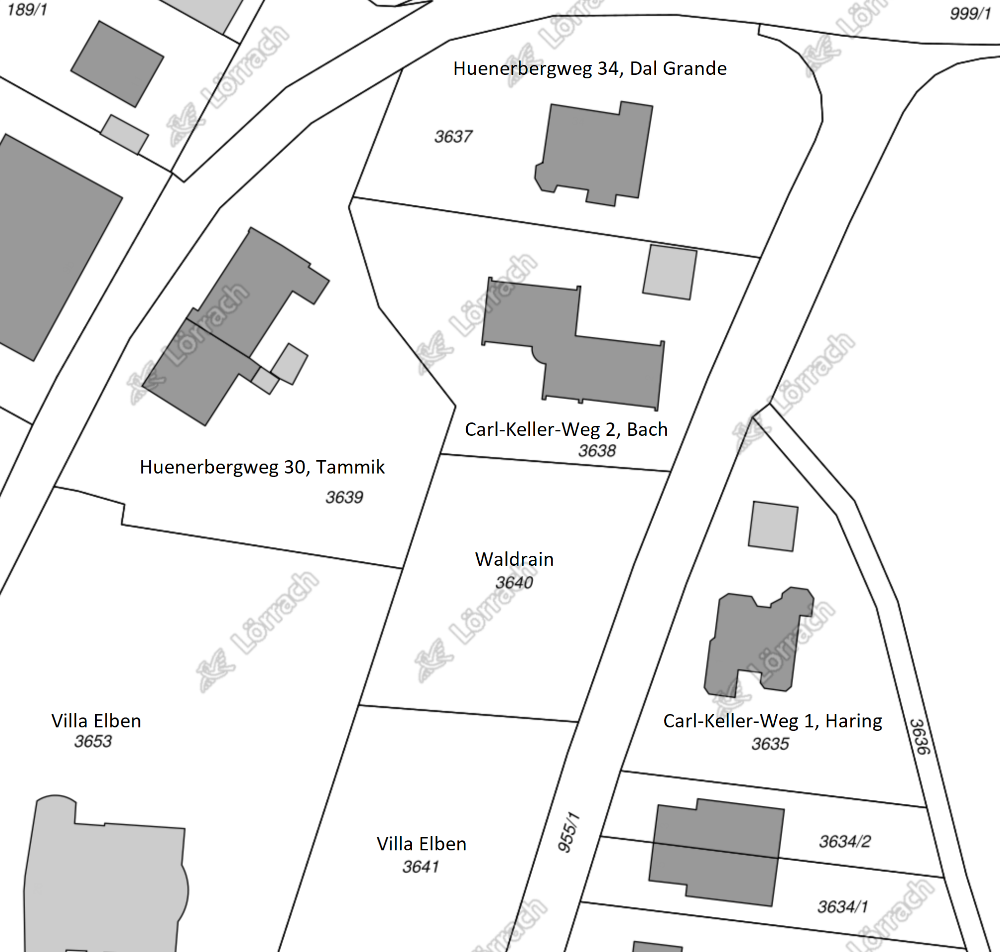

Willkommen am Waldrain!
Carl-Keller-Weg 6, D-79539 Loerrach –
Gewann Wächtersholden am Huenerberg Suedwesthang –
Ort –
Anfahrt
Hinweis: Diese Webseite ist offen.
Unseres Wissens stehen keine Geheimnisse drin.
Jede, die hier etwas Vertrauliches entdeckt, moege das bitte schleunigst anmelden und kundtun, so dass wir es entfernen koennen!
Vielen Dank!
Einladung an Architekten
Wir sind eine kleine Gruppe von Menschen, die gemeinschaftlich, ökologisch und nachhaltig Bauen und Leben wollen.
Wir haben ein konkretes Grundstück in Lörrach gekauft, das wir bebauen und beleben wollen.
Dort können wir auf ca. 1000 Quadratmeter Land ein Wohnhaus für ca. 8 bis 14 Menschen auf maximal 400 Quadratmeter Bau- und 800 Quadratmeter Wohnfläche errichten.
Wir streben an, vor September 2020 eine Bauvoranfrage bei der Stadt einreichen, um frühzeitig sicher zu sein können, dass unsere Bauvorstellungen tatsächlich verwirklicht werden können.
Wir sind dabei, eine Genossenschaft zu gründen, um dieses Vorhaben in gemeinsamer, geteilter Verantwortung umzusetzen.
Noch sind wir in einer offenen Findungsphase.
Die genauen Mitglieder stehen noch nicht fest.
Auch später ist Veränderung zu erwarten, also Flexibilität in der Raumgestaltung wichtig.
Wir sind angetan von Vollholz- und Lehmbau, Permahaus, Baubiologie, Ökologie, Nachhaltigkeit, viel Aussicht, viele Freiflächen, Balkons und Terrassen, gute Einbindung vom Garten.
Wir wollen viel Natur belassen und im Garten aktiv sein, auch mit Permakultur, Regenwassernutzung, Abwasserminimierung, evtl. Kompostklo, usw.
Jetzt suchen wir nach konkreten Lösungsansätzen, wie dieses Vorhaben begonnen werden kann.
Dazu möchten wir mehrere Architekten und Architektinnen auffordern,
im Sinne eines Vorentwurfs Vorschläge zu machen,
die zu einem Festhonorar oder Bezahlung gemäss Vereinbarung abgerechnet werden können.
Wir freuen uns über Ihre Rückmeldung!
Alles bisherige und weitere sehen Sie auf dieser Website.
Ihr Ansprechpartner: Jeremy Tammik, email (weitere Kontaktmöglichkeiten).
P.S. Die folgenden Absaetze wurden aus der Einladung geloescht, zum straffen und groesseren Freiraum schaffen:
Das Gebaeude soll viele gemeinsam genuzte Bereiche beherbergen, wie z.B. ein schoener grosser Eingangsbereich, Wohnzimmer, Kueche, Bad, usw.,
vielleicht ein bisschen inspiriert von dem aktuellen Konzept Cluster-WG.
Vielleicht gibt es einen grossen hellen Keller mit weiteren gemeinsamenen Bereichen wie z.B. Werkstatt, Ateliers, Kreativ-, Tanz- und Bewegungsraeume.
Es soll auch private Bereiche geben, in denen sich Einzelne, Paare und eventuell Familien ihr Privatleben fuehren koennen, ohne jeden Gemeinschaftszwang.
Manche von uns wollen sehr oekologisch Leben und wenig private Wohnflaeche in Anspruch nehmen; andere wuenschen sich einen groesseren Privatbereich.
Diese unterschiedlichen Ausrichtungen sollen Platz haben und respektiert werden.
Inhaltsangabe
Gemeinschaft
Leitfaden für Hausprojekte
Der Leitfaden für Hausprojekte bietet
eine wichtige Grundlagenlektuere mit Aufsaetzen zu folgenden Themen:
- Warum dieser Leitfaden?
- Die Geschichte der Hausprojekte
- Grundlagen Rechtsformen
- Selbstverständnis
- Rechtsform - Findung
- Gängige Rechtsformen
- Vergleich Genossenschaft - Mietshäuser Syndikat
- Privateigentum & Selbstorganisierung
- Haus - Findung
- Umgang mit Banken
- Bank - Konditionen
- Kritische Bankenwahl
- Förderung
- Die soziale Frage
- Moderation und Mediation
- Gruppenprozesse
Wichtige Grundsatzentscheidung
Soll die Spekulation und Veraeusserung fuer immer und ewig verhindert werden?
- ja --> mietshaeusersyndikat, gmbh + verein
- nein --> genossenschaft
Will die Hausgemeinschaft unabhaengig bleiben?
- ja --> eigene kleine genossenschaft
Konsum und Gemeinschaft
Eine Reportage des SRF zum Thema Konsum, mit einem interessanten Beispiel einer Gemeinschaft in der Schweiz:
Der 3. Beitrag handelt von einer Gemeinschaft, die eine sehr neuen und recht extremen Form lebt.
Macht mut, solches zu wissen, finde ich!
2. WohnWandelSymposium
Michael und Jeremy nahmen teil an
dem 2. Symposium WohnWandel – Gemeinschaftliches Wohnen in LÖ
am Samstag 30. November 2019, wo sie Vortraege uund detaillierte Infos erhalten konten von:
- Lebenswerte Nachbarschaft Basel
- Helma Haselberger vom Mietshäuser Syndikat Freiburg
- Burghard Flieger, Innova eG ueber Hausgemeinschaftsgenossenschaften
Lebenswerte Nachbarschaft Basel
Lena ist die Bau- und Wohngenossenschaft Lebenswerte Nachbarschaft in Basel.
Das Konzeptpapier von Lena ist lesenswert.
- qm pro person, verschiedene wg-varianten, geminschaftraeume
- kleine kuechen, eine grosse gemeinsame
- gemeinschaftlich essen, kochen, gemuese produkte
- gemeinschaftsbad
- sternenbar
- ateliers
- lautes, leises
Energieverbrauch
- Laut Lenahaus: Energieverbrauch in der Schweiz: 35% Anderes 28% Essen 34% Wohnnen (davon 2/3 Heizen), 12% Transport
- Laut Matthias: Energieverbrauch in Deutschland: 49% Heizen, 35% Transport, 7% Haushalt, 2% Beleuctung, Stueckholz hat eine bessere Energiebilanz als Pellets, Hackschnitzel sind guenstiger als Pellets; Preis pro kWh: Scheitholz 5.6, Hackschnitzel 5.8, Pellets 6.5, Strom 29, Sonne 0; amm biligsten ist das was du gar nicht brauchst: Daemmung und Sonne
Mietshaeusersyndikat
Das Mietshäuser Syndikat entzieht Mietshaeuser dauerhaft der Immobilienspekulation.
- hausverein bestimmt alles im haus
- syndikat gmbh wacht darueber, dass nicht privatisiert wird
- beide zusammen bilden die haus-gmbh, mit je einer stimme, und alle entscheidungen muessen einstimmig sein
- haus gmbh has 25000 eigenkapital, je haelftig syndikat und verein
- 150 hausprojekte
- finanzierung von kfw bank fuer energieeffizientes bauen
- vom bw zu 0 preozent fuer 2400 euro pro qm fuer sozialer wohnungsbau
Burghard Flieger
- Projektbuero Freiburg
- 4 prinzipien von genossenschaften:
- foerderung: ziel nicht kapitalverwertung, sondern nutzen, z.b. gemeinschaftliches wohnen
- identitaet: mieter und vermieter identisch
- demokratie: ein mensch ein stimme unabhaengig von einlage
- solidaritaet: bei krisen und aufbau treten individualle interessen zurueck
- mitgliedschaft:
- unkomplizierter beitritt
- anteile kaufen, i.d.r. kann jeder anteile kaufen, billig
- pruefung: plichtpruefungen, insolvenzsicher
- haftung: maximal anteil
- austritt einfache kuendigung mit frist
- vorteile:
- nicht viel geld noetig
- genossenschaft ist immer richtig, wennn viele menschen gleichberechtigt wirtschaften wollen haftungsbegrenzt mit einfachen ein und austritt
- verein kann nicht wirtschaftlich aktiv sein
- gmbh keine gleichberechtigung und kein einfache ein und austritt
- vor allem relevant, um privateigentum zu vermeiden
- sonst gibt es spaetestens nach ca. 10 jahre probleme
- swot:
- strength: finanzielle mittel zusammentregen, unabhaengigkeit vom einzlelnen
- weakness: weniger finanzieller anreiz, knowhow fehlt (weil sie was verdienen wollen0
- opportunity: wahrnehmung, akzeptanz, glaubwuerdigkeit aufgrund von demokratie und foerderauftrag
- threat: kosten muessen gedeckt werden, wichtige aktaeure steigen aus
- 3 phasen: 1 orientierung, 2 planung, 3 gruendung
- meilensteine: satzung, geschaeftsplan, gruendung
- gruendungsversammlung, einreichung beim verband, eintrag register
- wichtige schritte: wirtschaftsplan, satzung, bauplanung
- dachgenossenschaft:
- bei 10-12 menschen rate ich eher ab von einer genossenschaft
- kosten 1500-2000 euro pro jahr
- dachgenossenschaft kann das verteilen helfen
- dachgenossenschaft ist eigentuemerin von grundstueck und gebauede
- bewohner sind mitglieder, und haben nutzungsvertraege
- genossenschaft in gruendung ist rechtsfaehig
- vorvertrag kann geschlossen werden
- fragen:
- fuer einzelgenossenschaft:
- welcher verband? zentralverband der konsumenten ... kooperation verein und dachverband ... berlin ... zdk-hamburg.de mach beratung
- welches register? fest geregelt, haengt vom ort ab.
- fuer dachgenossenschaft:
- welche dachgenossenschaft?
- gibts in loerrach oder in der naehe eine?
- foerderung?
Genossenschaft
Wir haben uns fuer die Gruendung einer kleinen Genossenschaft entschieden, bei der wir von
der ZdK unterstuetzt werden.
Artikel zum Thema:
Konzept
Entwurf Nummer 6 an Frau Bejnoud verschickt 2020-03-26.
Satzung
Entwurf Nummer 6 an Frau Bejnoud verschickt 2020-03-26.
Fragen und Ideen zur Satzung:
- Wollen wir die Gemeinnuetzigkeit? siehe
das Merkblatt zur Steuerpflicht von Genossenschaften
bei Neugründungen
des Genossenschaftsverbands:
Zwingend erforderlich ist für eine steuerbegünstigte Genossenschaft, dass sie unmittelbar mindestens einen der in § 52 Abs. 2 AO genannten Zwecke (z.B. Förderung der Wissenschaft, des Sports, der Kunst und Kultur) als Satzungszweck fördert. Außerdem muss sie u.a. die Allgemeinheit fördern.
- klima- und nachhaltigkeits- und andere ziele in der satzung messbar formuliren
- kommunikation und entscheidungen, s.u.
- wer darf vorlagen einreichen zur entscheidung?
- oekologisch gemaess baunorm soundso, z.b., SIA
- creative commons license
- qualifizierungspunkte erfassen fuer leute, die in die genossenschaft aufgenommen werden?
- verhindern eine infiltrierung der genossenschaft um ihre gueter zu verkaufen
- nicht veraenderbare punkte festhalten
Pachtvertrag
Erster Entwurf an Frau Bejnoud verschickt 2020-03-26.
- Ein Erbpachtvertrag kann Laufzeiten zwischen 50 und 99 Jahren haben. Weder Sie als Pächter noch der Verpächter kann den Erbpachtvertrag kündigen. Die lange Laufzeit und der Kündigungsschutz geben Ihnen die Sicherheit, dass Sie nicht kurze Zeit nach dem Hausbau vor die Haustür gesetzt werden. Ausnahme: Der Verpächter darf den Vertrag kündigen, wenn Sie das Grundstück verwahrlosen lassen oder wenn Sie ohne schriftliche Zustimmung des Verpächters statt eines Wohnhauses beispielsweise eine KFZ-Werkstatt bauen. (Immnet.de Pachten)
- Vorteil – Ihr größter Vorteil als Pächter: Sie müssen "nur" den Hausbau finanzieren und für das Grundstück eine jährliche Pacht zahlen. Es fällt kein Kaufpreis für das Grundstück an.
- Nachteil – Nach Ablauf der vereinbarten Laufzeit fallen Grundstück und Gebäude an den Grundstückseigentümer zurück. Dieser zahlt Ihnen zwar das Haus (etwa zwei Drittel des Zeitwertes), Grundstück und Haus sind jedoch für Sie als Pächter verloren. Denken Sie bei maximalen Vertragslaufzeiten über 99 Jahre deswegen an mögliche Erben.
- Kosten – Die jährliche Pacht kann, ebenso wie Mieten, steigen. Die Pacht sollte an einen offiziellen Index gekoppelt sein. Der Mietspiegel als Referenzgröße ist ungünstig. Günstiger ist der Verbraucherpreisindex (VPI) des Statistischen Bundesamtes, oder der offizielle Bodenpreisrichtwert.
ZdK
- Zentralverband Deutscher Konsumgenossenschaften e.V.
- Ansprechpartnerin Frau Farnoush Bejnoud, Syndikusrechtsanwältin, Tel 040/2351979–8, E-Mail info@genossenschaftsgruendung.de, nur vormittags
- Auch kleine Genossenschaften sind Mitglied bei der ZdK, z.b.
- https://www.gemeinschaft-burghofstauf.de/die-bewohner
- https://www.ourhausleipzig.de/index.php/projekt/wir
- Unterlagen:
- Konzept
- Satzung
- Pachtvertrag
- Finanzplan
Kommunikation und Entscheidungen
Wie kommunizieren wir?
Wie teilen wir uns mit und hoeren wir uns zu, so dass alle zu Wort kommen?
Wie finden Entscheidungen statt?
Es gibt viele Arten zu Kommunizieren und gemeinsam Entscheidungen zu faellen, z.b.:
Hartmut und Isabell haben Erfahrung mit Konsent und Soziokratie, wie
von Sociocracy for All (SoFA) propagiert:
Was ist eine gute Entscheidung?
Wenn alle, die davon betroffen sind, gut damit leben können?
In unserem Alltag ist das oft nicht der Fall.
Im demokratischen System hat sich deshalb die Abstimmung mit einfachen Mehrheiten etabliert.
Je stärker Bedürfnisse, Meinungen und Haltungen auseinander liegen, desto weniger liefert die Abstimmung Lösungen, mit den alle leben können.
Man denke nur an Entscheide, die mit knappen Mehrheiten getroffen werden.
Die Soziokratie bietet hier Verfahrensweisen, um alle Betroffenen in die Entscheidung einzubeziehen, deren Widerstände zu hören, in die Entscheidung einfließen zu lassen und so am Ende die Entscheidung zu treffen, die für die Betroffenen gemeinschaftlich getragen wird.
Dazu gibt es einen einfachen Prozessablauf, der in der Gruppe eingeübt und von ihr getragen werden muss.
Neben dem reinen Grundsatzentscheid gibt es weitere Elemente der Organisationsentwicklung, wie die soziokratische Wahl und die soziokratischen Kreise.
Weitere Informationen liefert der Ueberblick Was ist Soziokratie? (25 Minuten).
Hier ist eine Auflistung einiger Werkzeugen und Techniken, die wir nutzen koennen (und z.T. auch tun):
Integrale Raumplanung
Stefan Best sagt:
Das Entwickeln eines in vielerlei Hinsicht stimmigen Raumes ist ein überaus vielschichtiger Prozess.
So vielschichtig, dass wir nicht allein kognitiv-intellektuell an eine solche Planung herangehen können.
Um etwas originär Neues in die Welt zu bringen, das die unterschiedlichsten Aspekte unseres Daseins und Zusammenlebens miteinbezieht und die dazugehörenden wechselseitigen Bezüge und Vernetzungen neu empfindet und denkt, braucht es eine ganzheitliche Herangehensweise, die auch das Immanent-Zukünftige, die werdende Wirklichkeit miteinbeziehen kann.
Im angehängten Merkblatt habe
ich versucht, meine eigene Praxis der Raum- und Gartenplanung und -gestaltung strukturiert zusammenzufassen.
Es enthält auch intuitive und imaginative Elemente.
Sie sind wesentlich, damit sich auch das zeigen kann, was von unserem kognitiven Radar nicht erfasst wird.
Es ist auch empfehlenswert, gewisse Schritte gemeinsam als Gruppe oder auch zu zweit zu gehen.
Vielleicht kennt ihr die Theorie U von Otto Scharmer – vgl. hierzu
den Vortrag von Claus Otto Scharmer über sein Buch Theorie U (10 Minuten).
Sie beschreibt sehr schön, wie man wirklich Neues entwickeln kann, ohne nur alte Erfahrungen zu wiederholen.
Ich hoffe, das Merkblatt hilft euch weiter.
Darlehensvertrag an eine Genossenschaft
Ein sehr gut ausgearbeiteter Vertrag fuer Darlehen an mit einer Genossenschaft mit Rueckzahlung usw. gibt es in der Gemeinschaft in Degersheim – Rene Duveen fragen.
Frau Farnoush Bejnoud von der Zdk betont hierzu auch: In Bezug auf die privaten Darlehen sollten sie sich zu gegebener Zeit (wenn der Abschluss des Vertrages ansteht) mit meinem Kollegen Herrn Weber austauschen, damit sie in der Vertragskonstellation keine Fehler machen, die der Genossenschaft rechtliche Probleme bereitet. Es sind nämlich nur bestimmte Vertragskonstellationen möglich, die nicht gegen das Kapitalanlagegesetzbuch, Vermögensanlagegesetz und weitere Gesetze verstossen.
Wohnraumpreise in Degersheim
Gedanken und Erfahrungen von Pia und Rene aus einer existierenden Gemeinschaft:
In Degersheim werden die Mieten pro Quadratmeter nach verschiedenen Aspekten gewichtet.
Das alles ergibt ein Punktesystem:
- verschiedene preise fuer wohnraum oben, unten (mit gartenzugang) und in der mitte (am guenstigsten)
- alle bewohner ziehen sowieso im haus herum, es aendert sich dauernd
- nordllicht, suedlicht, gang usw. wird mit bewertet
Wohnform Cluster-WG
Hartmut hat etwas gesucht zu den Größen von Clusterwohnungen.
Im Kraftwerk 1 in der Schweiz leben 100 Leute auf 3260 qm in 11 Clusterwohnungen, vgl. das Konzept und die Bewerbug fuer das Koch-Areal Koch, ein Zürcher
Originalrezept.
Das sind natürlich riesige Gebäude und sehr urban – ein wenig mehr Platz kann es bei uns ja schon sein...
Ein Zitat aus der Beschreibung von Cluster-Wohnungen im Artikel Architektur für Wohnprojekte – Impulse für innovative Wohntypologien:
In der Konzeptionsphase für ein genossenschaftliches Mehrgenerationen-Projekt – Kraftwerk 2 in Zürich – suchte eine Gruppe Älterer nach neuen Wegen, um in der zweiten Lebenshälfte gemeinschaftlich und zugleich möglichst selbständig zu wohnen. Die Besonderheit: Die Gruppenmitglieder hatten bisher in Wohngemeinschaften gelebt. Sie wollten diese Wohnform grundsätzlich beibehalten, wünschten sich aber ein größeres Maß an Privatheit, als es in einer klassischen Wohngemeinschaft der Fall wäre.
Der aus diesen konzeptionellen Vorüberlegungen entwickelte Wohnungstyp – die sogenannte Cluster-Wohnung – kombiniert Elemente eines gemeinschaftlichen Wohnprojekts mit denen einer Wohngemeinschaft. Innerhalb einer großen abgeschlossenen Wohnung gruppieren sich separate Wohneinheiten rund um einen gemeinsam genutzten Wohnraum, eine große Küche und ein Bad. Anders als in einer klassischen Wohngemeinschaft verfügt jede der Kleinwohnungen über ein eigenes kleines Bad und eine Kochgelegenheit. Im Gegensatz zum gemeinschaftlichen Wohnprojekt sind private Wohneinheiten und Gemeinschaftsflächen stärker miteinander verzahnt. Diese Gestaltung lässt ein Maximum an gemeinschaftlichem Leben zu und ermöglicht zugleich den Rückzug in die eigene komplette Wohnung.
Im Kraftwerk 2 entstanden in zwei mehrgeschossigen, durch einen Neubau verbundenen Bestandsgebäuden neben herkömmlichen Wohneinheiten unterschiedlicher Größe auch zwei Wohnungen des neuen Typs.
Die beiden Cluster-Wohnungen umfassen jeweils eine Gesamtfläche von 320 m². Der Gemeinschaftsraum, eine Küche und ein Wannenbad, insgesamt ca. 130 m², stehen allen Bewohnern zur gemeinsamen oder individuellen Nutzung offen. Über den zentralen Raum besteht Zugang zu (je?) sieben Kleinwohnungen, die für eine oder zwei Personen ausgelegt sind und über 30 bis 50 m² individuelle Wohnfläche verfügen. Ein knapp bemessener Vorraum mit Nasszelle und Kochnische ergänzt jede dieser Wohneinheiten.
Den Beteiligten im Kraftwerk 2 lag daran, ein Gegengewicht zum wachsenden privaten Wohnflächenverbrauch herzustellen. Dafür akzeptierten die Initiatoren Abstriche an persönlicher Wohnfläche und Ausstattung im Vergleich zu einer konventionellen Wohnung, zumal die gemeinsamen Flächen diesen Verzicht ausgleichen.
Ein zweites genossenschaftliches Schweizer Projekt für das Wohnen Älterer setzt die Idee des Clusterwohnens nicht innerhalb einer gemeinsamen Wohnung, sondern in einem kompletten Haus um. Auf jeder der vier Etagen des Gemeinschaftswohnhauses „Kanzlei-Seen“ in Winterthur finden sich sowohl Gemeinschaftsflächen als auch zwei bis fünf komplette abgeschlossene kleine Wohnungen. Mit 45-60 m² Fläche und der Aufteilung in zwei separate Räume sind diese Wohneinheiten großzügiger als im Projekt Kraftwerk 2. Etwa ein Drittel der Fläche im gesamten Gebäude steht für eine gemeinsame wie auch individuelle Nutzung zur Verfügung.5
Hier noch ein Podcast aus Berlin zum Thema, Summe der einzelnen Teile, Nachhaltig wohnen: Clusterwohnungen, die WG fürs Leben (13 Minuten).
Wir muessen uns alle drueber klar werden, wie viel Oekologie und wie viel Luxus wir uns goennen wollen!
Und schauen und entscheiden, ob wir ein Mass finden (wollen), dass fuer alle passt, oder eine Spannbreite suchen muessen.
Grundstueck
Fotos
Lageplan
Der Lageplan kann eingesehen und abgefragt werden ueber
das geoportal
> Stadt Loerrach
> Nutzungsbedingungen akzeptieren
> Zu Adresse Flst. Navigieren
> 3640
> 3640 Loerrach waehlen
> Navigierknopf druecken.
Das sieht dann ungefaehr so aus:

Fuer genaue Masse der Kantenlaengen der Grenze koennen wir auf die Umlegungskarte zurueckgreifen:

- Koordinaten im Uhrzeigersinn latitude, longitude, SQD M5 RECS500 WKT GK3 UTM WGS84
- 47.61240288, 7.66845556, 3399968.350 5275750.187 NW
- 47.61238603, 7.66886804, 3399999.438 5275747.726 NO
- 47.61227361, 7.66880501, 3399994.427 5275735.266 Ost Mitte
- 47.61208123, 7.66871077, 3399987.019 5275714.050 SO
- 47.61209766, 7.66831761, 3399957.374 5275716.405 SW
- 47.61226304, 7.66839227, 3399963.329 5275734.709 West Mitte
- 47.61225074, 7.66859154 Mittelpunkt
- Kantenlaengen im Uhrzeigersinn in Meter laut Umlegungskarte
- Nord 31.10
- Ost 13.34 + 22.51 = 35.85
- Sued 29.63
- West 19.26 + 16.24 = 35.50
- Flaeche 1043 quadratmeter
Ueberpruefung der Koordinaten, Kantenlaengen und Grundstuecksflaeche in Python durch
die geolocation_waldrain
geolocation calculation for the Waldrain plot of land.
Man kann die Koordinaten auch interaktiv umrechnen, z.B. in
dem koordinaten-umrechner.de
oder in epsg.io.
Bebauungsplan
Der Bebauungsplan bestimmt genau, was wo wie gebaut werden darf:

Gelaendemodell
Herr Nils Janz vom Vermessungsamt Loerrach
hat am 2020-04-07 das Grundstueck offiziell vermessen:
- Grenzpunktmarkierungen gesetzt
- Gelaende vermessen, inklusive:
- Buergersteig und Laternenpfahl am Carl-Keller-Weg
- Boeschung am Carl-Keller-Weg entlang
- Boeschung im Nordwesten
- Mauer im Suedosten (gruen)
- Die zwei grosse Baeume (gruen)
Die folgenden Daten wurden von der Stadt zur Verfuegung gestellt:


Hier kann man das digitale Gelaendemodell in 3D drehen, von verschiedenen Seiten betrachten und Schnitte generieren:
Anleitung: ein Dreieck in der Mitte der Flaeche anklicken; das wird dann blau ausgeleuchtet.
Rechts draufklicken und Focus waehlen; dann wird das Dreieck gezoomt;
danach rauszoomen mit der Scrolltaste der Maus, um die ganze Flaeche wieder zu sehen.
Full Screen klicken, um weitere Werkzeugicons anzuzeigen.
Danach funktionieren die Werkzeuge Orbit und Section Analysis gut,
um das Modell zu drehen und Schnitte zu definieren.
Hier ist noch das etwas naivere Ergebnis der manuallen Hoehenmessung von Jeremy, bisher nur die Nordhaelfte des Grundstuecks.
Die Messung erfolgt in einem 3 Meter Raster entlang parallelen Linien in 3 Meter Abstand voneinander, parallel zu der Norgrenze, von dem Carl-Keller-Weg runter, von Ost nach West, von Nord nach Sued.
Hoehenversatz in cm:
- Nordgrenze, von NO nach NW, 0 m S – +0 33 54 61 54 65 51 61 67 83 68 (72)
- Parallel dazu, 3 m weiter S – +2 57 42 70 57 47 62 61 72 96 80
- 6 m S – +0 78 45 61 54 64 50 73 90 130 40
- 9 m S – +0 88 68 52 37 66 61 69 96 111 28
- 12 m S – -5 108 56 38 52 80 51 83 144 53 29
- 15 m S – -3 122 51 20 99 65 73 77 123 34 37
- 18 m S – -5 130 64 44 74 62 59
Das ergibt folgende Hoehenversatz- und kumulierte Werte berechnet
mit hoehenversatz.py:
0 0.00 0.33 0.54 0.61 0.54 0.65 0.51 0.61 0.67 0.83 0.68
kum 0.00 -0.33 -0.87 -1.48 -2.02 -2.67 -3.18 -3.79 -4.46 -5.29 -5.97
3 0.02 0.57 0.42 0.70 0.57 0.47 0.62 0.61 0.72 0.96 0.80
kum 0.02 -0.55 -0.97 -1.67 -2.24 -2.71 -3.33 -3.94 -4.66 -5.62 -6.42
6 0.00 0.78 0.45 0.61 0.54 0.64 0.50 0.73 0.90 1.30 0.40
kum 0.02 -0.76 -1.21 -1.82 -2.36 -3.00 -3.50 -4.23 -5.13 -6.43 -6.83
9 0.00 0.88 0.68 0.52 0.37 0.66 0.61 0.69 0.96 1.11 0.28
kum 0.02 -0.86 -1.54 -2.06 -2.43 -3.09 -3.70 -4.39 -5.35 -6.46 -6.74
12 -0.05 1.08 0.56 0.38 0.52 0.80 0.51 0.83 1.44 0.53 0.29
kum -0.03 -1.11 -1.67 -2.05 -2.57 -3.37 -3.88 -4.71 -6.15 -6.68 -6.97
15 -0.03 1.22 0.51 0.20 0.99 0.65 0.73 0.77 1.23 0.34 0.37
kum -0.06 -1.28 -1.79 -1.99 -2.98 -3.63 -4.36 -5.13 -6.36 -6.70 -7.07
18 -0.05 1.30 0.64 0.44 0.74 0.62 0.59
kum -0.11 -1.41 -2.05 -2.49 -3.23 -3.85 -4.44
Baufenster
Das Baufenster innerhalb der Grundstuecksgrenzen ist im Bebauungsplan mit dicken Strichpunkten markiert und erfordert 5 Meter Abstand vom Carl-Keller-Weg (siehe Bemassung) und ca. 6 Meter von der Grenze zur Villa Elben.
In der folgenden Skizze sind
ausserdem 3 m Abstand von den Nord- und Suedgrenzen vorgesehen.
Die Abstaende an den Nord- und Suedgrenzen werden laut Landesbauordnung LBO geregelt, minimal 0.4 mal Fassadenhoehe.
Entlang der Nordgrenze entsteht moeglicherweise ein Zufahrtsweg.
Das blaue Rechteck in der Nordwestecke auf dem Grundstueck vom Huenerbergweg 30 stellt Michaels Wohnmobil dar:

Wohnmobil
Geometriedaten zu Michaels Wohnmobil – welchen Wenderadius braucht mein WoMo?
- Länge 8 m + 0,70 m Fahrradständer
- Breite 2,50 m
- Höhe 3,30
- Achsenabstand 4,20 m
- Überstand von Vorderachse 1,30 m
- Überstand von Hinterachse 2,50
- Bei 3 m Wegbreite braucht der Wagen für eine 90° Kurve ca. 6 m Radius im äußeren Kurvenbereich, für die beiden Achsen. (Befestigter Weg)
- Wobei die Hinterkante zum Ausschwenken zusätzlich ca. 2 m ungehinderten Raum im äussersten Kurvenbereich benötigt.
- Also gesamt braucht die Kurve einen Aussenradius von mindestens ca. 8 m zur Innenkurve, besser wären natürlich 10 m Kurvenradius.
Grundflächenzahl
Infos zum Bebauungsplan
Ein paar Infos zum Bauplan von einem befreundeten Architekten, Wolfgang Gottschalk, am 2019-11-08:
Q: Koenntest du mir sagen, wo die genauen Baugrenzen innerhalb dieses Grundstueckes verlaufen?
A: Siehe die dicken Strich-Punktlinien auf dem Bebauungsplan.
Q: Wie viel Wohnflaeche, Kellerflaeche und Volumen duerften wir da hinstellen?
A: Grundfläche des Gebäudes 0.4 x 1040 qm = 416 qm, Geschossflächen 0.8 x 1040qm = 832 qm, offene und geschlossene Bauweise – d.h. Einzelhaus oder Doppelhaus möglich, max. 2 Wohneinheiten pro Haus.
Q: Gibt es Vorschriften und Beschraenkungen bzgl. Dachausformung, Stockwerkszahl, usw.?
A: Satteldach mit einer Dachneigung von 15-27°, max. 2 Vollgeschosse + Keller + Dachgeschoss.
Allerdings ist der Bebauungsplan jetzt schon fast 40 Jahre alt.
Deshalb wäre eine entsprechende Beratung bei der Stadt für dein Vorhaben sinnvoll.
Man sollte unbedingt eine Bauvoranfrage stellen bevor man den entgueligen Bauantrag stellt.
Offiziell darf man also laut dem Bauplan von 1978 nur 4 Wohnungen draufstellen und 800 m2 Wohnfläche schaffen.
Haus

Passivhaus
Der Vortrag ueber ein klimafreundliches Haus bietet interessante Grundlageninfos ueber Heizung, von Maris empfohlen:
- Wie man ein klimafreundliches Haus baut
- KfW-Effizienzhaus (40, 55, ... wieviel prozent des energieverbrauchs von einem typischen neubau braucht dieses haus?)
- Passivhaus, Effizienzhaus-Plus
- 20 euro Heizkosten pro Monat pro Wohnung
- 5 bis 10% Mehrkosten beim Bau
- 15% Baukostenzuschuesse bundesweit, z.t. pro Bundesland mehr
Allerdings gibt es Kritik an dem Konzept Passivhaus, weswegen wir jetzt in Richtung Permahaus tendieren.
Beim Passivhaus wird stark gedaemmt, um Waermeverluste zu vermeiden.
Dabei werden alle moeglichen Waermegewinne verhindert und vollkommen ausser Acht gelassen.
Permahaus
Es gibt kritische Stimmen zum Passivhauskonzept,
siehe Kerstin zum Thema Passivhaus,
vor allem vertreten und erforscht durch Guenter Pfeifer mit seiner kybernetischen Architektur.
Besser als Passivhaus: Permahaus – ökologie-optimiert, was Energie, Materialen, Resourcenumgang usw. betrifft.
Ein paar Stichpunkte aus dem Vortrag von Pfeifer:
- Patchworkhaus Muellheim
- Energiegarten im Haus als Interaktionsraum
- Monitoring, um wissenschaftliche Daten zu erheben – 480 keur Baukosten, Monitoring zusaetzlich 260 keur
Normen und Zertifizierungen
Baukosten
- 45% Rohbau inklusive Keller
- 15% Heizung, Sanitär, Elektro
- 40% Innenausbau
- Keller
– eur 1200 pro qm; 200 qm → eur 240000
- Haus
– Beispielhaus: kleines, eineinhalbgeschossiges Einfamilienhaus mit Satteldach, 90 m2 Grundfläche (ca. 10,5 x 8,5 m) und 120 m2 Wohnfläche;
Mit fuenf multipliziert: 550 qm grundflaeche, 600 qm wohnflaeche
300000 rohbau 100000
300000 dach fenster tuer 60000
450000 technik 70000
100000 innenausbau 20000
200000 architekt 40000
1350000 summe 270000
270000 baunebenkosten 10-20%
1620000 total inkl baunebenkosten
Mehrgenerationenhaus
Joerg sagt: Mehrgenerationenhäuser erhalten höheren Bundeszuschuss.
Die im Bundesprogramm Mehrgenerationenhaus geförderten Häuser haben bis einschließlich 2019 jeweils bis zu 40.000 Euro pro Jahr erhalten, davon 30.000 Euro vom Bundesministerium für Familie, Senioren, Frauen und Jugend und 10.000 Euro von der jeweiligen Kommune, dem Landkreis und/oder (anteilig) vom Land. Durch diese verbindlich vorgegebene Kofinanzierung wird die Einbettung des Mehrgenerationenhauses in die Kommune gefördert und die Rolle der Häuser als kommunale Akteure gestärkt. Im Jahr 2020 erhalten alle Mehrgenerationenhäuser einen um 10.000 Euro erhöhten Bundeszuschuss, sodass ihnen zusammen mit der Kofinanzierung insgesamt bis zu 50.000 € zur Verfügung stehen.
Das Bundesprogramm Mehrgenerationenhaus wie auch das ab 2021 geplante Anschlussprogramm sind als Fachprogramm ins gesamtdeutsche Fördersystem aufgenommen worden. Das Bundesministerium für Familie, Senioren, Frauen und Jugend plant die Fortsetzung der Förderung der Mehrgenerationenhäuser im bisherigen Umfang auch für das Anschlussprogramm ab 2021. Die Kofinanzierung seitens der Kommunen, Landkreise und/oder Länder wird weiterhin Voraussetzung für den Bundeszuschuss bleiben.
Informationen über die näheren Planungen für das Anschlussprogramm ab 2021, das für 2020 vorgesehene Antragsverfahren sowie die Förderrichtlinie finden Sie zu gegebener Zeit auf der Website des Bundesprogramms Mehrgenerationenhaus www.mehrgenerationenhaeuser.de.
Vorentwurf
In der Architekteneinladung sprechen wir von einem Vorentwurf.
Dabei wird bewusst noch nicht eine offizielle Bauvoranfrage bei der Stadt angestrebt.
Die Bauvoranfrage ist eine wesentliche Stufe weiter, stellt z.B. die Kubatur fest.
Vorher muss ein wichtiger erster Schritt genommen werden: die Gruppe muss sich einig werden.
Bei dem Vorentwurf geht es nicht um Details.
Der Vorentwurf kann aus Handzeichnungen in Bleistift oder Tusche bestehen, ohne Masse und ohne Maße, ein kuenstlerisch Entwuerf.
Viele Architekten koennen heutzutage nicht mehr freihand zeichnen...
Honorar fuer die Bauvoranfrage
Marco Jansen schaetzt fuer die Bauvoranfrage Kosten in Hoehe von ca. Euro 4800 anhand vom Bauvolumen, max. 800 qm Wohnflaeche multipliziert mit ca. 3 m Geschosshoehe, macht 2400 Kubikmeter.
Bei einem einfachen Einfamilienhaus mit vorliegenden Plaenen belaufen sich
die Kosten einer Bauvoranfrage auf weniger als 500 Euro,
bei groesseren Objekten bis zum zehnfachen.
Architektenhonorar insgesamt ca. 15 Prozent der Baukosten.
Leistungsphasen eines Architekten:
- 2-3 % Grundlagenermittlung
- 7 % Vorplanung
- 11-15 % Entwurfsplanung
- 3-6 % Genehmigungsplanung
- 25 % Ausführungsplanung
- 10 % Vorbereitung der Vergabe
- 4 % Mitwirkung bei der Vergabe
- 31-32 % Objektüberwachung
- 2-3 % Objektbetreuung und Dokumentation
Bauideen
- Chalet Schauer von Baufritz
– Marianne sagt dazu: Lueg mol, das find ich ganz ansprechend.
Natürlich nicht 1:1 übernehmen, aber die geschützten Aussenflächen und die Glasfassade sind toll.
- Haus im Gewaechshaus
- Ihre Visionen 2050 – Fünf Vorreiter der Digitalisierung in der Schweizer Bauwirtschaft sagen voraus, wie sie die Zukunft aus der Perspektive ihrer aktuellen Führungsposition sehen. Denn: «Nichts ist so beständig wie der Wandel.»
- dachausbauten oder dachfenster, um in alle raeume sonnenlicht reinzulassen
- bett unter dem dachfenster wie in dem terassenzimmer im waldhaus luetzelflueh
- breiter gang statt gemeinschaftraeume
- jacuzzi beheizt auf dem dach
- rueckzugsmoeglichkeit mit ein paar kumpel, ohne das andere bewohner dazustossen koennen oder man sich wehren muss
- gewaerchshaus an der suedseite (rene beheizt seinen im fruehling sogar)
- wintergarten (rene beheizt seinen im fruehling sogar)
- michael's architectural hints
Baumaterialien
- Naturmaterialien, vorbildlich demonstriert von Haus Eins mit
einem neun-Minuten video
- lehmputz
- holzstaender bau, holzfaserplatten, holzschalung oder lehmputz aussen, lehmputz innen, viel glas
- umlaufende balkons rundum und grossen dachueberstand, damit fenster leicht zu putzen von aussen und auch um sonneneinstrahlung zu reduzieren im sommer.
- grosser keller mit fenster nach vorne und grosse offene werkstatt fuer gemeinschaftsraeume und ateliers und werkstaette
- stellplaetze und anschluesse vorsehen fuer bauwagen, baumhaus, evtl. tiny houses
- alle oberflaechen wo nicht glas oder tuer: begehbar, begruent oder solarpanel
- lehmputz selber vor ort herstellen
Holzhaus, Burkart und Thoma
Einstieg:
- Building with Wood, ein Vortrag von Florian Thoma, Dipl. Ing., St. Johann, Pongau, Österreich, gehalten am 24. Internationalen "Wissenschaftlichen Ausblick" Welt-Kongress von The World Foundation for Natural Science in Ulm.
Der Vortrag zeigt Möglichkeiten, die sich uns beim Bauen auftun, wenn wir die Geschenke der Natur nutzen und auf Chemie verzichten.
Häuser in echter Holzbauweise verbrauchen keine Energie und sind am gesündesten für uns und die Umwelt.
Wir können mit Freude vorausblicken, denn es gibt keine Zukunft, sondern nur das Potenzial der Gegenwart.
Der 1 stündlicher Vortrag hat mich sehr beeindruckt.
Die Firma Thoma wurde 1990 gegründet, weil Erwin Thoma, der Förster, für seine Kinder das gesündeste Haus bauen wollte.
Heute ist das Unternehmen als umweltfreundlicher Industriebetrieb weltweit ausgezeichnet.
Die Firma ist evtl. auch für unsere Weiterentwicklung eine gute Adresse, um weitere Ideen zu sammeln.
Die World Foundation for Natural Science ist auch sehr interessant:
Holzstaenderbauweise
- in der fabrikhalle vorgefertigte fertigelemente
- damit ist auch eine komplexe gebaeudeform realisierbar
- alle rohre und technik kann schon eingebaut werden
- ales wird in der fabrik vorgefertigt
- das ist aiuch eine oekolgischere bauweise, effektiver in der fabrik
- kein grosser kran notwendig
Tiny House
Neue Holzbautechnik auf der Swissbau 2020
- Krinner Schraubfundamente
- Betonlos sofort belastbar
- Haus hinstellen ohne Betonfundament
- Schrauben in allen Groessen
- Je nach Groesse mit einer Montagemaschine oder mit einem Bagger
- Wilma Holz Beton Verbundsystem
- Tragegeruest aus Vollholz, vorgefertigte Betonbodenplatten draufschrauben, minimal ausgiessen
- Minimaler Bauaufwand, optimale Schalltrittdaemmung
- Bio-XLam Massive Leimfreie Holzwand
von ligna construct
- Holzverbundwaende in allen Dicken je nach Statik
- mit Holzwolle, Massiv, ...
- Fertige Paneelen geliefert mit Kabelkanaele frei vorgefertigt fuer freie Infrastrukturverlegung innenseitig
- Schweizer Holz
- eggo Holzkastenelemente
von Egg Holz Kaelin AG
- Selbsttragende befuellbare Fussboden-, Decken- und Dachpaneele aus Holz
- Befuellung nach Bedarf: thermische Isolation, Schalldaemmung, Trittschall, Raumschall, Leitungen verlegen
- Lignatur AG Holz Decken- und Dachelemente
- Waermedaemmung, Schall- und Trittschalldaemmung
- Tragen ueber grosse Spannweiten
- Feuerfest
- Braun AG Gossau CH
- Grosshandel für Holzwerkstoffe
Kueche
Rene und Pia haben ihre Kueche bestellt bei möbelum, Wiesentalstrasse, Freiburg.
Die Möbel sind ein deutsches Fabrikat und aus Massivholz.
Obere Küche aus Fichte, untere Buche.
Wir haben keine Fronten bestellt, weil wir sie selbst aus eingefärbtem MDF machen wollen.
Wir haben uns für farbige Küchenfronten entschieden. Die gibts als MDF schon eingefärbt.
Ich hab mich an die angebotenen Masse gehalten laut Euro-Norm, also 30, 40, 50 usw.
Das hat soweit immer gut geklappt.
Bad
- in der wand eingebaut geheizte kupferrohre als heizung und handtuchhalter
- billiger und besser als ein badheizkoerper
- rene hat im bad einen handtuchtrocknerheizkoerper mit danfoss thermostat im vorlauf gefolgt von fussbodenheizung in ruecklauf in 16 mm dreischicht metallverbundrohr. diese rohre kann man auch in der wand benutzen. selfio und Sanitär- und Heizungsshop.
Keller
- lehmboden lassen, abfallend?
- kellerdecke ebenerdig mit strasse
- betonfuesse, rostfreie stahltraeger, holzbalkenstaender mit dreiecksaussteifung
- isolation seitlich
- erdboden im sommer heizen und als waermespeicher nutzen
- Der Kellerboden im Haus von Stefan Best ist nicht betoniert abgeschlossen nach unten, sondern mit losen Ziegeln auf Lehm und einem Kiesbett gepflastert.
- Das Fundament von Haus Eins nildet ein Steinkeller, welcher aus dem Aushubmaterial des eigenen Grund und Bodens stammt, aehnlich wie im Haus von Stefan best.
- Das Haus auf Stelzen stellen, entweder Stahl oder sogar Holz? Die Kellerwaende aus Naturstein, Ziegel, oder andere Materialien? Wenn wir den Boden sowieso offen lassen wollen, warum nicht die Waende auch?
Dachwohnungen
- photos schweizer dachwohnungen: luflu, daniel b, thomas m, joerg r
Gebrauchte Fenster
Rene hat acht gleich grosse fenster.
Koennte man in einen grossen bauweagen einbauen, um ihn aufzuhuebschen.
Technik
Solar
- Build-It-Solar
– Plans, tools and information to help you build renewable energy and conservation projects.
- Jaehrliche Sonneneinstrahlung ca. 1200 kWh/m2*Jahr in Basel, cf. Globalstrahlung.
In Deutschland geht man im Schnitt von einer jährlichen Sonneneinstrahlung von 1.000 Kilowattstunden (kWh) pro Quadratmeter aus.
Im Sommer werden Werte bis zum Fünffachen der Sonneneinstrahlung im Winter erreicht.
- Treppenlicht 350 kWh p.a., ca. 1 kWh p.d.
Faustregel 1:1:1 – 0.35 MWh p.a. → 0.35 kWp (p steht für Peak) Solarmodul-Anlage und 0.35 kWh Akku als Richtwert;
Ein 12V 30 Ah Akku entspricht rechnerisch 0.36 kWh.
- Kleine Solaranlage selber bauen
- Kleine 400W Solaranlage selber bauen
- github.com/simat/BatteryMonitor/wiki
Isolation
Daniel hat Informationen zum Thema Isolation am Bau geteilt:
Holzfaserplatten
- sind oekologisch und gut
- holzstaenderbauweise
- lehmputz innen
- lehmputz aussen, mit eine duennen schicht kalkputz oben drueber zum schutz gegen regen
- umlaufende balkons und weiter dachueberstand, damit die waende vor feuchte geschuetzt sind
Heizung
- holz + solar + erde + waermetauscher
- riesiger warmwasserspeicher
- beheizter steinvorrat?
- niedrigtemperatur fussbodenheizung, mindestens im bad und wohnzimmer
Warmwasser und Heizungsspeicher
- warmwasserspeicher modell jenna
- 4000 liter inkl. einen 500 liter boilr in dem speicer eingebaut duerfte reichen fuer 6 wohungen und 12 personen
- speicher wird geheizt durch: thermisch durch solaranlage und grundofen
- im sommer auch elektrisch durch photovoltaik
- boiler ist im speicher eingebaut und wird vom speicher geheizt
- waermepumpe mit boiler fuer heizung?
Wasserfuehrender Holzofen
- Holzofen mit Wassenheizung und Backmoeglichkeit
- Rene hat einen Holzheizungsherd Oekoalpin 100plus von Pertinger Holzherde
- Neu gibt es jetzt auch schon die noch besseren Sturzbrandöfen.
- Waermetauscher fuer Ofenrohr – groesesseres rohr drum rum schweissen und anschluss oben und unten
- Stefan Best hat eine Solaranlage verbunden mit einem Holzofen von Claude Chiquet,
sopra Solarpraxis AG,
vgl. deren System Zeus.
Abwasser
- Abwasserleitungen Dimensionierung und Nennweiten
– DIN 1986 Entwässerungsanlagen für Gebäude und Grundstücke Teil 100: Bestimmungen in Verbindung mit DIN EN 752 und DIN EN 12056 enthaelt Bemessungstabellen
- Haustechnik – Berechnung des erfoderlichen Rohrdurchmessers
– demonstriert berechnung von Fall- und Grundleitungen fuer verschieden Wohnungsgroessen und Entwaesserungsflaechen.
Fallleitung DN 100 reicht fuer uns.
Grundleitungsgroesse haengt von der maximalen abzufuehrenden Regenmenge ab. Erstmal reicht auch hier DN 100.
Wenn wir jemals sehr viel Regenwasser abzufuehren haetten, muessten wir wahrscheinlich sowieso den Huenerberger Schacht verbessern.
- Abwasserleitung – Gefälle, Durchmesser und Material
– Üblicherweise ist hierzulande eine getrennte Abführung des regulären Abwassers und des Regenwassers vorgeschrieben.
HT-Rohre sind grau, hitzebeständig, und werden innerhalb von gebaeuden verlegt.
KG-Rohre sind orangefarben, stabiler, und werden daher als Grundleitung für das Abwassersystem im Aussenbereich eingesetzt.
Grundleitungen sollten laut der DIN 1986-100 mindestens 10, besser 15 cm Durchmesser haben.
Die Verrohrung des Abwassersystems muss mindestens 80 cm tief in der Erde verlegt werden, damit kein Frost die Leitungen schädigen oder einfrieren kann.
Entlueftung nach oben ist wichtig wegen Druckausgleich.
Seit 2016 muss jeder Grundstückseigentümer die Dichtigkeit seiner Abwasserleitungen sicherstellen.
Ein Nachweis über Dichtigkeitsprüfung durch zertifizierten Fachmann muss erbracht und alle 20 Jahren erneuert werden.
- Konkrete Vorschlaege von Rene und Daniel
- mindestens drei leerrohre legen: abwasser, wasser pe-rohr, strom + internet
- schacht auf halben weg vorsehen, mit steckdose und entleerungshahn; unten steine zum versickern, damit eventuell vorhandenes waser nicht weiter runter in die leerrohre fliesst
- zugdraeht durchlegen
- grau 75 mm reicht aus fuer strom + internet
- fuer frischwasser reicht auch 75 mm, eventuell auch zusatz rohr um regenwasser von einer grossen sammelstelle oben am waldrain zu huenerbergern runter; 1 1/4 zoll pe-rohr geht durch; 2 fette perohr braucht 90 mm; fuer 2 stueck 3/4 zoll pe-rohre reicht 75 mm
- abwasser 110 mm orange
- das pe-rohr muss den druck aushalten. Mit 15 meter Hoehenunterschied herrscht unten 1.5 bar mehr als oben. Wenn oben 3 bar ankommen sollen, muss unten 4.5 oder 5 bar herrschen, also nicht die schwaechsten rohre benutzen, die nur ca. 6 bar aushalten.
- Beim Bauamt festzustellen, ob eventuell abwasser per verordnung minimum 150 mm sein muss;
muss man schmutz- und regenwasser bis zur parzellengrenze getrennt fuehren?
manche abwasserverordnungen verlangen zwei getrennte abwasserleitungen fuer regen- und schmutrzwasseer.
Abwasserverordnung carl-keller-weg.
Laut dem Wikipediaeintrag zur Abwasserleitung muss der Anschlusskanal (Leitung vom öffentlichen Strassenkanal bis zur Grundstücksgrenze oder bis zum ersten Reinigungsschacht im Grundstück) in Deutschland mindestens 15 cm Nennweite = Rohrdurchmesser haben.
Garten
- Teiche anlegen
- Regenwasser sammeln
- Tiere halten?
Aussenkueche
Wenn schon Barbara und Michael da oben sind, und wir auch schon Anschluesse fuer Strom, Wasser und Abwasser hochlegen, koennen wir auch gleich eine schoene Aussenkueche bauen.
Eineriesige Kuechenspuele haben wir schon.
Fehlen nur noch ein paar Gasflaschen und ein Gasherd fuer das komplette Inventar.
Dach drueber, Tisch und Stuehle her, gemuetliche Sitzplaetze dazu, und der vorlaeufige Waldraintreffpunkt ist gebongt.
Wuerde ich gerne in Angriff nehmen, sobald der Zufahrtsweg fertig ist, oder schon vorher.
Raumnutzung an der Strasse entlang
- wasser + kompostklospeicher + waermespeicher in wasser oder stein?
- wasserspeicher -- unter dem stellplatz?
- heizung mit holzhackschnitzel
- 5 meter streifen an der strasse entlang als bunker fuer holzhackschnitzel ausbauen
- 15 meter langer zylindrischer wassertank 50 kubikmeter sleicher unter dem stellplatz einlagern
Stuetzmauer
- https://awfrance.com/grundstuck/stutzmauer-berechnung-und-konstruktion
- naturstein? holz? beton? gabionen?
- https://duckduckgo.com/?q=ecological+footprint+gabione+concrete
Fahrwege
Bagger
- price in hardly ever under 10k
- buy a new one and share with or sell to cipriano
- nicola has one in her garden. who does it belong to? Magnus will ask.
- ask dal grande, falk, daniel
- ask the people with a garden beside the road up to the tuellinger lindenplatz
- ask haring: the one he had is too old and broken. he recommended checking with Insolvenz + Nachlass Verwertungen Umkirch.
- facebook Gebraucht Bagger
- Verkaufe verschiedene Minibagger und Radlader – K2 Maschinenhandel tel 015223138393, Alte Dorfstraße, 79682 Baden-Württemberg - Todtmoos
- Daniel empfiehlt:
- mindestens 2.5 tonnen
- schild fuer arbeiten im hang
- boeschungsloeffel, breit, kippbar
- gummi oder stahlraupen egal, stahl ist vielleicht sogar besser
- hebehaken an den loeffel oder an den armen anschweissen
Oekologie, Nachhaltigkeit, Autarkie
Holzkohle
- Ithakainstitut Koehleranleitung
- Fotos vom erdkontiki: hoeheres blech, niedriges blech starten, niedriges blech fuellen
- Artikel ueber Potenziale der Kohlenstoffspeicherung im Boden (Englisch: Putting carbon back where it belongs – the potential of carbon sequestration in the soil; Deutsch): Landwirtschaft produziert 25% aller GHG greenhouse gas. Biochar, produced through pyrolysis of biomass, is a long-term stable form of charcoal. Biochar has multiple benefits, many of which are not yet understood. It is resistant to decomposition and can stabilize organic matter added to soil. Biochar can also form long-term carbon pools in the soil, sequestering up to 0.5 GtC/ year globally, and in an extreme if unrealistic case up to 8.3 GtC. The application of biochar provides a range of soil fertility and soil quality co-benefits, such as the promotion of fungi and bacteria growth, improved water and nutrient retention, decreased pathogen impacts, increased soil porosity and higher crop yields if pre-composted.
- Kon-Tiki8303.ch
- CharNet — Fachverband fuer Pflanzenkohle und Pyrolyse
- Die erste gesamtschweizerische Fachtagung zu Pflanzenkohle und Pyrolyse im urbanen und kommunalen Kontext findet statt am 2020-03-12 im Restaurant Seegarten, Basel: Fachtagung Charnet Schweiz – Dekarbonisierung mit Pflanzenkohle und Pyrolyse
- 2 kg trockenes holzhaecksel max 30% feuchtigkeit --> 4 kWh waerme + 400 gramm pfalnzenkohle --> 1250 gramm co2 der luft entzogen wenn im boden gespeichert
- ein fuenftel vom holz gewicht kommt als pflanzenkohle raus
- 2 tonnen holz = ca. 3 steher holz (chf 3 * 130) --> 1 kubikmeter kohle (chf 400) + waerme als gewinn
- 1 tonne holz verkoehlern statt verbrennen: man gewinnt die haelfte der waerme plus 400 kg holzkohle
- das verhindert die emission von ca. 1 bis 1.2 tonnen CO2 in die athmosphaere
- CO2-Vergleiche bei der Herstellung von Biokohle – Rechenbeispiele von Rene basierend
auf Zahlen und Fakten von waldschweiz.ch:
- 1 kg Häckselmaterial (bei weniger als 30% rel. Feuchte) ergeben 400g Pflanzenkohle = 1250g CO2 im Boden gespeichert plus 4 kWh Wärme als Gasflamme
- 800 kg Häckselmaterial ergeben 320kg Pflanzenkohle = 1000 kg CO2 im Boden gespeichert plus etwa 3200 kWh Wärme
- 2500 kg Häckselmaterial ergeben 1000 kg Pflanzenkohle
- Ein Schweizer verursacht pro Jahr etwa 7 To CO2.
Dies entspricht etwa 5.6 Tonnen verkohltem Häckselmaterial.
1 Tonne CO2 entspricht ungefähr 800 kg Häckselmaterial oder etwa 1 m3 gewachsenes Holz.
7 Tonnen CO2 entsprechen also 7m3 Holz im Wald.
- Um meine jährliche CO2-Emisssionen zu kompensieren (also um klimaneutral zu sein) müssen für mich pro Jahr 7 m3 neues Holz wachsen.
10 Mio m3 Holz wachsen jedes Jahr in der Schweiz.
1.5 Mio m3 Holz werden pro Jahr für Energieholz gewonnen.
66 Bäume wachsen für jeden Schweizer/Schweizerin.
Wenn also der Schweizer Wald unsere CO2-Emisssionen kompensieren soll, müsste er jedes Jahr um etwa 56 Mio m3 wachsen (8 Mio x 7 m3).
Pro Person macht das etwa 6 durchschnittliche Bäume.
Soviel zur CO2-Kompensation!
Koehlern im Waldrain Ende Maerz 2020
Bald machen wir im Waldrain eine Koehleraktion.
Zur Zeit stehen zwei Termine in Aussicht: Dienstag 31.3 oder Freitag 17.4.
Wir verkohlen die vorhandenen Holzreste, um sie mit Kompost zu mischen,
Terra Preta herzustellen,
sie in Hochbeete einzuarbeiten, und sie im Garten zu vergraben, um Kohlenstoff im Boden zu Speichern,
vgl. die verschiedenen Informationen zu Holzkohle oben.
Vorbereiten:
- Strom hochlegen und Elektroinstallation einrichten fuer Wasserpumpe (Konsole, 75 m Drehstromkasbel, Anschluss).
- Holz vorbereiten und trocken lagern, maximal unterarmdicke
- 1 kubikmeter Wassertank bereitstellen (und fuellen?) – Johanna has an empty 300 litre tank ready.
- Loch fuer Erdkontiki graben, siehe Bilder oben
Holzmasse und Preise
- Metrische Raummasse für Holz
- Festmeter (fm) – Erntefestmeter (Efm), Vorratsfestmeter (Vfm), Schichtfestmeter (Sfm)
- Raummeter (rm), auch Ster – Schüttmeter oder Schüttraummeter (srm)
- Preise als Stammholz –
Buchenholz kostet auch als sehr hochwertiges Stammholz meist nicht mehr als 85–110 EUR pro Efm.
Bei Eiche beginnen die Preise dort erst und gehen bis zu 350 EUR pro Efm.
Nur sehr minderwertige Qualitäten der Klasse CD liegen bei rund 75–90 Efm.
- Eichenstamm ca. d = 0.4, l = 6, cross section a = 0.628, volume v = 6 * a = 3.768, value ca. eur 450
Regenwassernutzung
In Baden-Wuertemberg faellt pro Jahr ca. 935 mm oder knapp 1 meter Regen pro Jahr,
siehe Niederschlagsmenge im Jahr 2019 nach Bundesländern.
Daher kann man pro Quadratmeter Sammelflaeche im Jahr knapp 1 Kubikmeter Wasser sammmeln.
Der durchschnittliche Wasserverbrauch pro Kopf in Deutschland betraegt
122 L pro Tag oder ca. 45 Kubikmeter pro Jahr.
Am Huenerberg haben wir pro Jahr ca. 300 Kubikmeter verbraucht fuer 8 Leute, oder ca. 37.5 Kubikmeter pro Jahr und Kopf.
Mit 50 Quadratmeter Regensammelflaeche pro Kopf und einen genuegend grossen Speicher koennte man also den ganzen Wasserbedarf mit Regenwasser abdecken.
Ca. 27% des pro-Kopfwasserverbrauchs wird fuer Klospuelung benutzt. Mit einem Kompostklo koennte man den Anteil sofort einsparen.
Cornelius nutzt bereits ein Osmosefilter fuer sein eigenes Trinkwasser, und filtert damit das Hahnwasser.
C + J bauen zur Zeit am Huenerberg ein zweites Osmosefiltersystem, um aus Regenwasser Reinstwasser zum Trinken zu gewinnen.
- osmosefilter spaltet ja ueber die haelfte ab als verlust
- wohin damit? sopeichern und anderweitig nutzen
- klare auflistung von verbrauchern, die osmosefiltriertes wasser brauchen
- aktivkohlefilter reicht aus fuer das meiste
- vielleicht nur reinsttrinkwasser durch osmosefilter lassen
- alles uebrige, z.b., waschmaschine, dusche
- getrennte wasserversorgungsleitungen
- osmosewasser direkt am geraet holen
- aktivkohlefiltriertes wasser in den wasserleitungen zum kochen, haende waschen
- unfiltriertes regenwasser pur zum duschen, waschmaschine betreiben
- regenwassertank: betontank ist teuer un unoekologisch.
es gibt gebrauchte gereinigte industrietanks, z.b. aus stahl.
in sennrueti haben sie einen 50000 liter tank fuer chf 5000 gekauft und eingebuddelt.
gebrauchte tanks gibt es auf tanks.ch.
- Wolfgang sagt: Regenwassernutzungs- und Klaeranlagen gibt es fix fertig
– z.B. kann man frisches Regenwasser sammeln fuer Waschmaschine, Duschen, Spuelen, Bad und Dusche, oekologische Seife benutzen, keine Chemie.
Das Abwasser hiervon ist Grauwasser. Das kann man auch sammeln, durch ein Kiesfilter durchlassen und nochmal fuer Klospuelung nutzen.
Anbieter z.B. Mall Umweltsysteme, Broschuere ueber oekologische Regenwassernutzung.
Permakultur
- Moni macht sich hier schlau und immer schlaeuer
- Almut Schmidt-Rau versorgt sich seit 30 Jahren fast vollkommen autark im eigenen Garten mit Wasser, Gemuese, Honig, Imkerkurse, Naturheilpraxis, Terra Preta.
Baumschnitt
- Tatjana: Um Wasserschosse zu vermeiden, sollte man bei Tagen mit absteigenden Mond schneiden (also wenn der Mond in den Zeichen von Sommersonnenwende bis Wintersonnenwende steht: Loewe Jungfrau Waage Skorpion Schuetze Steinbock).
Kompostklo
- Kompostklos, Urintrennung und Faekalienkompostierung im Campingplatz in Thielle
- Photos und Skizze von Renes Kompostklo
- Terra Preta und Saegespaene als Einstreu im Kompostklo
- Faekalien kann man mit Terra Preta und Saegespaene gemischt im Eimer sammeln, ein paar Wochen stehen lassen, dann auf eine Miete tun.
5 * 1 meter muesste fuer die Faekalien-Terra-Preta Miete reichen.
- In Thielle gibt es einen Ueberschuss an Urin; eine Person scheidet pro Tag ca. 1.5 bis 2 liter aus
- Urin kann gesammelt und weiterverarbeitet werden, z.b. Aurin Duenger
– der erste Urin-Dünger weltweit mit kompletter Zulassung.
Dank Aurin braucht Urin kein Wasser mehr, um die Kanalisation herunterzuwandern.
Urin wird ohne Verdünnung direkt verarbeitet, effizienter als in jeder Kläranlage
→ schematisches Bild vom Aurin Prozess.
- Beispiel von Trennung von Urin zur Verarbeitung in Aurin Duengemittel in normalen modernen WCs in
the NEST Building on Empa’s Dübendorf campus
– Text durchsuchen nach 'The urine is separated'.
- Tomaten düngen mit Urin: ein sinnvoller Dünger?
Autarke Abwasserklaeranlage
- Abwasserklaeranlage wie fuer Tiny House
- 8 * 3 meter Wasserversickerungsbereich koennte reichen fuer Waldrainprojekt
- Kompostklos verringern die Abwasserbelastung mit Urin und Faekalien, die getrennt abgefuehrt und behandelt werden
- Grauwasser wird in Behaelter gesammelt
- Kiesbett mit Sand und Pflanzen wird regelmaessig mit dem Grauwaser geflutet, das dann versickert
Kultur
- Vorbildfunktion: wir wollen gerne vorbildliche oekologische Lebensweisen und -Konzepte entwickeln, die wir teilen und vorzeigen koennen
- Bewegungsraum, Tanz, Musik, Kultur
- Offenheit nach Aussen, Veranstaltungen, Vernetzung
Finanzen
Grobe Finanzplaene stehen und sehen haltbar aus.
Wir haben es natuerlich leicht, so lang die Zinsen so niedrig bleiben wie heute.
Wenn wir es schaffen wuerden, je 100000 einzubringen plus eine miete von 10 euro pro qm zu zahlen, dann haben wir viel geld.
10 euro pro quandratmeter der gesamten wohnflaeche... wie wird das verteilt?
Manche wollen nur ganz klein bei sich hocken, andere benuzten wohnzimmer, kueche, bad, atelier, tanzraum, waschkueche usw.
Das sind viele quadratmeter, die gezahlt werden muessen, und die wir uns teilen, vielleicht unterschiedlich.
Wenn ich z.b. eine miete von 500 euro im monat zahle, sind das 6000 im jahr.
Damit kann ich zur zeit fuer einen kredit von 200000 zins plus tilgung zahlen.
Multiplizier das mit den anzahl leuten, die zusaetzlich zu uns vier genossenschaftsgruendern kommen sollen.
Selbst wenn nur vier leute dazu kommen wollten, haetten wir schon mehr als genug.
Wenn es mehr sind, klappt es noch besser...
Manche haben auch ein grosses interesse an sinkende Mieten im Alter.
Ansprechpartner
Unistudien
Banken
Barbara hatte Kontakt mit der GLS-Bank und sagt:
Wenn wir irgendwann Kapitalbedarf haben...
Mir wurde ein Experte empfohlen für Bauunternehmen, wie wir es planen:
Volker Krauth, Tel. 0761-7663131, volker.krauth@gls.de.
Er betreut z.B. ein solches Projekt in Bad Krozingen.
Gemeinschaftsinteressentinnen
- Barbara + Michael
- Moni + Jeremy
- Moc C
- Sunahla + Govinda
- Araceli + Jörg
- Joachim L
- Anja B
- Doris P-S + Lukas 11 + Lara 7
- Martin Z?
- Christine S + ?
- Magnus W?
- Daniel B?
- Ehemals interessierte: Axel + Michaela H, Marianne S, Sabine G, Hartmut S + Isabelle S-N
Architektenwahl
- Madlee empfiehlt Gerhard Zickenheiner, der jetzt im Bundestag für die Grünen sitzt.
Sein Büro Jansen Zickenheiner (email) hat er abgegeben an Marco Jansen.
Gerhard könnte euer Projekt ziemlich interessant finden und unterstützen...
Madlee kennt ihn vom gymy früher.
- Vielleicht sollten wir zusaetzlich zum Architekten einen Projektplaner hinzuziehen, findet Madlee.
Ulrich Plathe, Freier Architekt und Planer für Projeksteuerung in Tübingen, Holzmarkt 7, 07071/924525, leitet in Binzen ein Projekt für "anderes Bauen", nicht der höchst bietende bekommt Land, sondern es muß Sinn machen, genaueres weiß ich nicht. Das liegt ja vor der Haustüre, um sich evtl. beraten zu lassen. Vielleicht aus Infos über Förderungen solcher Projekte.
- Wolfgang Gottschalk ist befreundet mit Jeremy und hat am Huenerbergweg 30 schon andere Projekte geplant und durchgefuehrt.
Er hat in Loerrach schon Jahrzehnte als Architekt gearbeitet, nimmt jetzt keine neuen Auftraege mehr an, ist aber ansprechbar, z.B. wegen Bauvolumen, Hangabsicherung, usw.
- Haring hat ein geologisches Gutachten vom Carl-Keller-Weg wegen der Hangabsicherung.
- Alex Dedek kennt sich vielleicht mit Hangabsicherung am Huenerberg aus.
- Willy Lindemer, 0171-8481611, Architekt in Loerrach, ex-Partner von Wolfgang.
Angerufen am 2020-03-24; er hat bis Ende naechstes Jahr 2021 selber keine Zeit, bekommt eventuell bald eine neue frischgebackene Architin als Mitarbeiterin, fuer sie koennte das Waldrainprojekt von Interesse sein.
- Von Wolfgang empfohlen am 2020-02-12:
- Erich Baumann von der siedlungswerkstatt mit gruss von Olli Bucher und Wolfgang
– er hat 4-5 Holzpassivhaeuser in Stetten gebaut, auch in Ruemmingen Richtung Kandern in der alten Ziegelei;
schafft mit Breisgauhaus zusammen, die machen nur Holzhaeuser. Er baut eher nach Norm, Passivhaus, z.B., vielleicht nicht super flexibel mit Kybernetik und so...
- Tine Höfler, Architektin, Wiesentalstr. 74, 79539 Lörrach, +49-7621/7935907, fruehere Mitarbeiterein von Zickenheiner.
Angerufen am 2020-03-24; sie hoert jetzt mit der Architektur auf.
- Wenn die Planung erstmal steht koennte man auch an Oekohaus Ibach oder irgendeinen anderen Holzhausbauer herantreten. Die bauen auch hier in Loerrach.
- Voschlaege von Otto 2020-02-18:
- Vorschlag von Moc 2020-02-24
- Moc kann die Architekteneinladung weiterleiten an Andy Courvoisier, Basel.
Er kennt alle Architekten in der Region Basel. Andy empfiehlt weiter:
- Roman Bockemühl hat viel Verständnis für Baugruppen.
- Moser Architekten sind ganz in der Naehe vom Waldrain, mit Lörrach vertraut und eher 'typische Architekten'.
- Burckhardt Partner in Grenzach sind ebenfalls mit planerischen Rahmenbedingungen vertraut und zu einer grossen Bude gehörig – falls dies für umfassende Vorabklärungen noch ganz gut wäre.
- Moc nennt auch Natalia Wespi von kollektivearchitekt.
- Hartmut hat seinen Architekt gefragt, Andreas Konietzny, der jetzt bei Gies Architekten in Freiburg arbeitet.
Sie haben anscheinend einige Projekte in unserem Segment, aber auch viel Beton: Projekte
– Kleehäuser
– Eco-logis
– Haus-p
- Hartmut nennt das Büro Wilhelm und Hovenbitzer, Bergstrasse 24a, Lörrach;
Frau Wilhelm hat seinerzeit im WohnWandel Zukunftsforum den Entwurf für die Clusterwohnungen gemacht.
Fritz Wilhelm laedt uns ein, Unterlagen inkl. Lageplan usw. zuzuschicken.
- AHA Architekten:
Alex am Huenerberg 19 empfiehlt zwei Jungarchitekten, die damals bei uns am Haus mitgebaut haben machen sich gerade selbstständig.
Neben der Architektur machen sie auch Holzbau. Thomas Schmitz, Zimmerermeister, mobil: 017632057999, Mathias Duffner.
- Anja empfiehlt die Architektin Susan Galster, Im Bündtenfeld 9, 79737 Herrischried, tel +49-7764/9338970, mobil +49-176/62139211;
sie erwaehnte im Gespraech:
earthship, earthhouse, spaceship, mit gewaechshausgarten durch das das grauwasser geleitet wird;
heizung durch temperierung, strahlungswaerme, kupferrohre in lehmputz eingebettet, mit 5 mm lehm ueberzogen;
heliodome
- Siegfried Delzer, Delzer Kybernetik GmbH, Tel +49-7621-9577-0, email – Berechnung und Simulation vom Permahaus mit DK-Integral
- Julia und Thomas Kuri, kuriarchitekten und Kuri Holzbau, Schopfheim
- Juergen hess empfiehlt Werner Schmidt als
Architekturbüro für nachhaltiges, autarkes und ökologisches Bauen, siehe sein Konzept
von Oekologie und Autarke Gebäude
- Aktueller Ueberblick der Anfragen:
- Honorarfrage ist noch nicht geklaert;
Honorar fuer die Bauvoranfrage schon, aber Vorstudie?
- Tine Höfler – nicht mehr aktiv
- Gies und Konietzny – kamen am 8.4 zu Besuch, etwas arg retrospektiv
- Andreas Leisinger – interessiert, bisher nur Telefon- und Emailkontakt
- Susan Galster – wartet auf mehr Klarheit und weniger Weite
- Günter Pfeifer – Telefonat 30.3.
- Jansen – sehr interessiert, begeistert, war am 27.3. zu Besuch
- Thomas Schmitz, AHA – sehr interessiert, sehr interessant
- Büro Wilhelm: Emailkontakt am 2020-04-27 und 29; grosses Interesse, sich mit uns zusammenzusetzen
- Gemeinsam evaluieren: Jansen, Schmitz, Kuri, Wilhelm
- Noch nicht angesprochen: Dr. Wahbeh of FHNW, Würkert, Erich Baumann
Protokolle
Besprechung Alle 2019-11-08
Man müsste in einer Projektgruppe zusammen kommen und schauen was der beste Weg wäre.
Am Einfachsten wäre es sicher, in einer kleinen Gruppe ein Projekt auszuarbeiten, es von einem Architekten zeichnen zu lassen und dann entweder in Form einer Genossenschaft oder in Form einer Eigentümergemeinschaft, Eigentumswohnungen/ Anteile zu verkaufen.
Architekturbüros planen und beginnen mit dem Bau sobald die Finanzierung gesichert ist.
Für uns wäre eine klare Strukturierung des Projekts und Übersicht über ein Kostendach sehr wichtig. Zudem müssten wir auch abklären, wie die rechtliche Situation für uns Schweizer wäre.
Von mir aus gesehen wäre eine Realisierung mit 6 Anteilen preislich für uns tragbar...
Geschätzte Gesamtsumme: 2-2,5 Millionen/ 600m2 Wohnraum/ 100m2 Gemeinschaftsraum
Wesentlich hier wäre, von einem erfahrenen Projektleiter profitieren zu können.
Hanglage ist immer aufwändiger zum Bauen, je nach dem wie erschlossen das Gelände ist ist es teurer oder günstiger...
Besprechung Alle 2019-11-20
- wer ist dabei?
- stellplatz planung
- besuch bei der stadt
- anzahl wohneinheiten
- dachausformung
- projektname huenerberger oberelben (hotel elben der name kommt von familie elben besitzer seit 1940)
Ich füge noch meine persönlichen und unvollständigen Notizen des letzten Treffens bei:
Die Bauordnungen 1978 kann man beim Geoportal einsehen.
GBR ist eine problematische Gesellschaftsform, da jedes Mitglied mit seinem Privatvermögen für alle anderen haftbar ist.
Es gibt für kleinere Genossenschaften wie unser Projekt eine günstige und unkomplizierte Form. Er erkundigt sich mit Jeremy.
Unverbindliche Vorstellungen für Platzbedarf
- B 60m2 evl im Dach
- G + S 100m2 2 Bäder
- Ma 100m2
- M + J 80m2 (oder je 50m2)
- Mo 45m2
- Mi Standplatz und Anschlüsse für den Bauwagen
Ergibt 380-400m2.
- Gemeinsame Terrasse?
- Gemeinsame Werkstatt?
Die jetzige Gemeinschaft am Huenerbergweg hat keine gemeinsamen Innenräume, nur der Garten wird geteilt.
Man kann seine Türen zumachen und so funktionierts bestens.
Besprechung Genossenschafts 2019-12-05
- noch nicht noetig: Satzung + Finanzplan
- sondern nur konzept per email:
- gruendungsmitglieder
- was wird gebaut
- mitglieder
- foerderung der mitglieder (worin besteht sie, sind wir genossenschaftstauglich?)
- dann koennen wir den erster schritt einleiten:
- satzungsberatung
- sie schicken uns ein muster fuer satzungsberatung
- wir sollen keine mustersatzung aus dem netz nehmen
- keine fremde satzung ueberstuelpen
- word version benutzen, damit kommentare moeglich sind
Brainstorming Namensfindung 2019-12-25
- oberelben, ask family elben whether oberelben is ok
- oberelfen
- eichenhaus, eichenhang, eichengrund, eichenrod
- Attis, a minor god of vegetation, fruits of the earth and rebirth
- dorno, Primitive elvish for oak
- monte gigolo (huener > huehner > gueckel > gigolo)
- eichennest
- waldelfen
- Zum Waldrain (vorschlag von michael, s.u.)
- baumhirten
- Ask und Embla, the first human beings in Norse mythology, created from trees and whose names may mean "ash" and "elm"
- Waldheim
- Herzwald
- Baumherz
- Eichenherz
- Torin eichenschild
- Eichenring
- Eichenkreis
- Eichenheim, hoehle, bau
- Eichenholzhaus
- Holzheim, holzhaus
- Von Holzen
- Donars Eiche
- Ask und Embla, the first human beings in Norse mythology, created from trees and whose names may mean "ash" and "elm", "Esche" und "Ulme"
- Eschenheim (die Eschen sterben zur Zeit aus, und es stehen da etliche)
- Eschenrain
- Eichenrain
Besprechung Alle 2020-01-20
Anwesend: S + G, Mar, Moc, B + Mi, M + J
Themen
- Prozessgestaltung, Hektik, Verantwortung, arbeitsteilige zeitlogische Abfolge, externe Moderation?
- Finanzplaene von moc und jeremy
- Webseite aufschreiben, strukturieren, wegen Uebersicht fuer alle, als Einfuehrung fuer neue Interessenten, Info an Uni und FH-Projekte
- Neuanfragen: Magnus W, Joachim L
- Genossenschaft, Satzung, Gruendung, Ziele
- Kommunikation: koennen wir Richtlinien festhalten? Friedensvertrag? Fuenf Achtsamkeisuebungen?
- Entscheidungsfindung: Konsens?
- Architektur
- Architektenwahl
- Projektarbeit: fertigen Plan an Ausfuehrende uebergeben, oder Handwerker schon bei der Planung mit ins Boot holen?
- Oekologie und Nachhaltigkeit
- Wohnfläche pro Person, langfristiger Umgang mit zu erwartenden Veränderungen von Singles, Paaren, Familien, WGs; Führung durch eine Cluster-WG organisieren durch moc
- CO2, Holzbau, Holzkohle
- Beduerfnisse, Wuensche, Traeume
- Garten, Kompost
- Autark?
- Wasser: Sammeln? Aufbereiten?
- Abwasser: Kopmpostklo? Versickerung?
- Konkrete Schritte: Infrastruktur? Bauwagen? Stellplatz?
Besprechung Infrastruktur 2020-01-21
Anwesend: B + Mic, J
Thema: Standplaetze, Infrastruktur und Zufahrt auf das Gelaende einrichten.
- abwasser
- bagger?
- site plan -- lageplan
- call bank -- underway
- steine fuer terassenmauern? michael fragt beim steinbruch nach
- abholzen:
- vor ende februar baeume faellen
- benner um erlaubnis fragen
- von strasse runter folgende baeume faellen:
- 2 meter hohen stumpf entfernen
- eiche 40 cm durchmesser
- haselnussbusch
- haselnussbusch
- 1 esche, die zweite nebendran kan stehen bleiben
- haselnussbusch
Besprechung mit Araceli und Joerg 2020-02-02
Anwesend: A + J, J + Mon
- nach zwei-drei stunden beschnuppern: passt super! wann treffen wir uns im groesseren Kreis?
Social Entrepreneurship Camp DHBW 2020-02-07
- Mohammad Yunus, Erfinder Mikrokredite, Grameen Bank, seven principles, Gutes tun und dabei Geld verdienen
→ auf die genossenschaft anwenden
- business objective eg overcome poverty
- business model
- investors get back investment only no dividend
- profit stays with company for expansion and improvement
- environmentally conscious
- workforce gets market wage with bettr werkong conditions
- Meine Interessen: Genossenschaft, gemeinschaftlich nachhaltiges Bauen und Leben
- Christoph Hiss, zivilgesellschaftliches Unternehmertum
- hat fuer seine bio-gaertnerei eine AG gegruendet
- wertpapier beschreibung, prospekt
- was hat der aktionaer zu erwarten
- diese beschreibung muss genehmigt werden
- kapitalmarkt, aktionaere schuetzen
- bafin bewertet
- oeko und nachhaltigkeit als rendite neben der geld-bilanz
- es wurde genhmigt, zehn jahre her
- kriterien fuer 'gut' ausgearbeitet
- um den aktionaeren vorzulegen, die in seine bio-gaertnerei AG investieren
- bewertung von gut und schlecht
- nicht nur dividende in geld
- was geht hinter dieser rechnung ab?
- biodiversitaet, nachhaltigkeit
- alle risiken inklusive wetter und kernkraftwerk
- alle vorteile inkl. biodiversitaet usw.
- nach 10 jahre vorarbeit hat jetzt die bafin neue regeln vorgelegt, wo nachhaltigkeit und oekologie in die bewertung von wirtschaftsunternehmen mit beruecksichtigung finden muss.
- ebenso ist SAP gerade dabei, neue buchhaltungsprogramme auf den markt zu bringen, die solche werte in die buchhaltung mit beruecksichtigen.
- bafin erstellt neue richtlinien fuer die bilanz mit nachhaltigkeitsrisiken
- man muss rueckstellungen bilden, weil das geschaeftsmodell risikobehaftet ist
- Andreas Renner, gexsi, Finanzierungen fuer soziale Innovationen
- Precious Plastic, individual recycling
Meeting with Wolfgang 2020-02-12
Meetings with Rene and Daniel 2020-02-16
Filmvorfuehrung The Biggest Little Farm.
Meeting with Otto 2020-02-18
Meeting with Moc 2020-02-24
Rapport 2020-02-27
- Neue Interessentinnen: Araceli und Joerg, mit denen wir uns ausfuehrlich getroffen haben;
Joachim, den Moni und Jeremy gut kennen;
Anja und Doris, die ich noch nicht kenne.
Ich hoffe, sie koennen am 14.3 dabei sein, damit wir uns mal alle treffen!
- Filmvorfuehrung und Gespraeche mit Araceli und Joerg
- Kontakte und Webseite gepflegt: viele Gespraeche mit Wolfgang, Otto, Moc sind eingeflossen
- Konzept und Satzung der Genossenschaft: Entwurf Nr. 5 erarbeitet und an die ZdK verschickt
- Wasseranschluss vorbereitet: neue Wasseruhr im Keller am Huenerbergweg
- Stromanschluss vorbereitet: Zaehler, Kabel, Drehstrom- und Wechselstromsteckdosen
- Zwei Baeume gefaellt fuer den Zufahrtsweg: eine grosse Esche und eine noch groessere Eiche
- Vermessung des Gelaendes inkl. Hoehenvermessung mit Magnus Sohn Marvin eingeleitet
- Vorbereitung fuer das Koehlern in der zweiten Maerzhaelfte
- Holz bereitgestellt
- 2500 Liter Wassertank abgeholt und aufgestellt
- Stromanschlussmaterial besorgt fuer Wasserpumpe und andere Werkzeuge
- Einladung fuer die gemeinsame Besichtigung
- Einladung an Architekten konzipiert, editiert, korrigiert; seid ihr damit einverstanden?
Wenn ja, bitte an Architekteninnen und andere kreative Visionaere weiterleiten!
Meeting with Moni 2020-03-06
Unverbindliche Vorstellungen für Platzbedarf der aktuellen Interessenten in Quadratmetern von Moni und Jeremy frei geschaetzt:
- B 60 evtl im Dach
- G + S 100 2 Bäder
- M + J 80 (oder je 50)
- Mo 45
- A + J 100
- Joa 60
- Do 60
- An 60
- Ha + Is 80
- Mi Standplatz und Anschlüsse für den Bauwagen
Ergibt 60+100+80+45+100+60+60+60+80 = 645 m2 Wohnflaeche fuer 12 Menschen,
vgl. Skizze zur Wohnflaechenberechnung.
Das ist schon mal recht viel.
Laut Bebauungsplan haben wir maximal 832 m2 Geschossfläche.
Wir brauchen ja noch Eingang, Treppenhaus, geminsame Bereiche, Keller, Werkstatt, Bewegungsraum, usw.
Laut dem Artikel zur Nutzungsfläche teilt sich die Geschossfläche auf in:
- Nutzungsfläche (NUF)
- Verkehrsfläche z.B. Eingang, Treppenraume, Aufzug, Flure
- Funktionsfläche z.B. Waschen, Trocknen, Heizung, Technik, Hauswasserwerk
Durchschnittliche Flächen- und Raumkennzahlen fuer Wohnhäuser:
- 0.53 Hauptnutzfläche
- 0.16 Nebennutzfläche
- 0.04 Funktionsfläche
- 0.11 Verkehrsfläche
Treffen am Sonntag 2020-03-08
- Anwesend:
- 14:30-16:00 A + J
- 16:00 H + I
- 16:30 A B
- 17:00 B + m
- A + J mussten leider frueh gehen.
Danach sassen wir bis 7 und diskutierten alles.
Vor allem: Kommunikationsformen, Gemeinschaft, Wuensche, Aengste, Finanzierung.
Sehr fruchtbar.
- Fragen zur Wohnflaeche:
- Wie viel Wohnflaeche brauchst du? Wie viele Quadratmeter?
- Brauchst du eine eigene Kueche? Reicht eine Kochnische? Qm?
- Brauchst du ein eigenes Bad? Reicht eine Nasszelle? Qm?
- Wuenscht du dir eine gemeinsame Kueche? Qm?
- Wuenscht du dir ein luxurioeses gemeinsames Bad? Sauna usw.? Qm?
- Wuenscht du dir ein schoenes grosszuegiges gemeinsames Wohnzimmer? Qm?
- Aussicht?
- Gartenzugang?
- Barrierefrei?
- Aufzug?
- Aussenraum? Balkon? Veranda? Terasse? Sitzplatz? Spielplatz? Tischtennis?
- Garten? Gemuese? Blumen? Wald? – Der Waldrain braucht Wald!
- Parkplatz?
- Platzberdarf private Wohnraumflaeche geschaetzt, vorausgesetzt grosszuegige gemeinschatliche Bereiche
- B 60 evtl im Dach
- G + S 100 2 Bäder
- H + I 70
- M + J 70 im Dach
- A + J 80 ebenerdig mit Terasse
- Joa 50
- Do 60
- An 60
- Mi Standplatz und Anschlüsse für den Bauwagen
Fragen und Wuensche von Araceli und Joerg
- Rahmenbedingungen Genossenschaft
- Genossenschaftsbeitrittskosten (minimum)
- Dauerhaft monatliche Kosten (Welche Kostenarten?)
- Auch Miete nach abzahlung Kredit?
- Umlage für Technische Standhaltung?
- Fehlen noch Kostenarten?
- Energiekosten verteilen auf einzelne Wohnungen?
- Bedingungen bei Investition fürs Haus (Zinsen, Rückerstattung beim Auszug, Entscheidungsmacht je nach Anteil?)
- Ansprüche auf gemeinschaftliches Leben
- Was sind andere gewünschte gemeinschaftliche Arbeitserwartungen?
- Mitmachen im Garten Voraussetzung?
- Putzen von Gemeinschaftlichen Räumen?
- Infrastruktur/Wohnwünsche
- Welche gemeinschaftlichen Räumen sind gewünscht?
- Gästezimmer?!
- Gemeinsame Küche zusätzlich?
- Massagezimmer?
- Gemeinschaftskatze?
- Parkplatz?
- Unsere Raumbedürfnisse
- Arbeitsraum Operngesang (In der Wohnung? Schallisoliert? außerhalb der Wohnung?)
- Wohnküche
- Schlafzimmer
- Bad mit offener Dusche (Ohne WC?)
- WC getrennt vom Bad (Kein Kompostklo)
- Erdgeschoss
- Hell (grosse Glastüren/Fenster)
- Direkter Gartenzugang auf kleine private Terrasse
Danke fuer die anregenden Fragen!
Wir haben sie angeregt diskutiert, und sie werden sicher auch weiterhin fruchtbare Inspiration schenken.
Einladung von Moc zur gemeinsamen Besichtigung vom Passivhaus in St. Pantaleon und Erlenmatt Cluster-WG am 2020-03-14
liebe interessierten rund um WALDRAIN in Lörrach
Am Samstag 14. März 2020 nachmittags ist die nächste Gelegenheit fürs Kennenlernen, Information und Austausch.
Ich schildere das Zusammensein an diesem Tag, ab Basel SBB mit öffentlichem Verkehr, der viel Zwiegespräch ermöglicht.
- 12:58 Basel SBB ab Gleis 7 nach Liestal mit Zug Richtung Interlaken Ost
- 13:07 Liestal Ankunft
- 13:15 Liestal Bahnhof ab mit Bus B73 nach St. Pantaleon, Degenmatt
- 13:30 ca. Ankunft St. Pantaleon
- 13:45 ca. Ankunft bei Stefan Best in der Gartenstrasse 1 in St. Pantaleon
Billett für 4 Zonen lösen.
Stefan Best zeigt uns Naturgarten, selbstgebautes Lehmhaus, Power-Ofen, erläutert seine Gedanken dazu und Erfahrungen damit.
Er wohnt dort mit Franziska Würtenberg und jüngeren Leuten, eine WG.
- 15:25 sind wir wieder an der Bushaltestelle, steigen in Liestal um und sind um
- 16.01 am SBB.
- 16:12 gehts auf den 30er Bus bis
zur Haltestelle Mattenstrasse.
Dort werfen wir einen Blick auf
das Mietshaus Mattenstrasse 74/76 vom Mietshäuser Syndikat Basel.
Danach geht es gleich weiter quer zur Erlenmatt Ost.
Da wimmelt es von gemeinschaftlich orientiertem Wohnen jeglicher Art.
Yvonne Portenier empfängt uns und führt uns durch das Gelände.
Wir landen schlussendlich im Café OST Bar Erlenmatt Ost,
wo die bei der Stiftung Abendrot Wohnenden ein Sitzungszimmer haben.
Da verweilen wir, können nebendran uns verköstigen, aber ich empfehle, sich ein wenig zu trinken und picknicken für zwischendurch mitzunehmen.
Offizieller Schluss ist dann gegen 19 Uhr; vorher haben Jeremy und andere noch etwas zu Waldrain erzählt und werden wichtigste Planungsschritte erläutert und diskutiert.
Und ein weiterer Gesamttermin vereinbart...
Diese Einladung und viele andere Informationen findet ihr auf
der Waldrain Webseite, auch neue und aktualisierte Eintraege.
Herzliche Grüsse von moc mike m.
Stefan am 2020-03-14
Erst Garten planen, dann Haus!
Wohnflaeche im Garten ist billig und begehrenswert.
Windschatten, Bepflanzung, Ausrichtung.
Haus nicht maximal hoch setzen, eher einbetten, um die Anbindung in den Garten zu maximieren.
Kosten, um Gartenflaeche schaffen 80-100 euro pro qm, fuer Wohnraum im Haus 3000-5000.
Holzofen von Claude Chiquet erfunden, jetzt sopra Solarpraxis AG, Hombergstrasse 4, 4466 Ormalingen.
Hypokaustenheizung, geheizt mit Sonneneinstrahlung und (selten) den zentralen Holzofen.
Basler Wandaufbau (auch Pariser) gute Schalldaemmung: 27 mm Schrottbretter eine Lage quer eine lage senkrecht, Schilfmatte drauftackern, Grund~lehm, Decklehm.
Stefans Haus ist echt kybernetisch, vollkommen Permahaus.
Erlenmatt Ost am 2020-03-14
Anwesend: Joerg Mariann Moc Hartmut Stefan Michael Hanna Jeremy
Bau- oder Zirkuswagen fuer B.: A-Bulletin und alternativweb.ch
Michaels Wohnmobil: 8 x 3 m, 3.5 hoch.
Wohnflaechen, Gemeinschaftsflaechen.
Kommunikations- und Entscheidungsfindungsgrundlagen;
im Genossenschaftskonzept steht schon was drin, aber es ist noch gar nicht vollstaendig ausgearbeitet.
Rundmail 2020-03-25
Wir haben nichts mehr ausgetauscht seit dem Besichtigungstermin von dem Lahmpermahaus von Stefan Best und dem Cluster-WG und andere moderne Wohnformen im Erlenmatt Ost am 14. Maerz.
Beide waren lehrreich und inspirierend.
Stefan hat betont die Wichtigkeit, erst den Garten zu planen, dann das Haus!
Wohnflaeche im Garten ist viel billiger und sehr fruchtbar und lebendig:
Gartenflaeche schaffen kostet 80-100 euro pro qm, Wohnraum im Haus 3000-5000.
Man kann achten auf moeglichst ganzjaehrige Nutzung, Windschatten, Bepflanzung, Ausrichtung.
Das Haus muss nicht maximal hoch gesetzt werden, wie oft angestrebt, um die Aussicht zu verbessern.
Oft ist es viel schoener, es gut in die Natuer einzubetten, um die Anbindung in den Garten zu maximieren.
Neben seinem grossen Suedfensterfront, im Sommer durch den Dachueberstand und mit schnellwachsendem Hopfen beschattet, im Winter voll Sonnenfang zum waermen, nutzt er auch einen Holzofen, von Claude Chiquet erfunden, jetzt sopra Solarpraxis AG.
Fuer Schalldaemmung innen hat er gute Erfahrungen gemacht mit dem Basler Wandaufbau (auch Pariser): 27 mm Schrottbretter eine Lage quer, eine Lage senkrecht, Schilfmatte drauftackern, Grundlehmputz, Decklehmputz.
Sein Kellerboden ist nicht zubetoniert, sondern mit losen Ziegelsteinen gepflastert, z.T. einfach direkt auf Lehm, z.T. auf Schotter gebettet.
Viele weitere tolle Ideen!
Sehr beeindruckend!
Im Erlenmatt Ost haben wir modernen oekologischen Betonbau erlebt.
Yvonnes erster Eindruck: nie moechte ich da wohnen!
Jetzt lebt sie da ganz und gar und freut sich sehr ueber eine grosse lebendige Gemeinschaft.
Moc hat angeregt, dass wir jetzt angfangen, uns ein bisschen verbindlicher zu formieren und auch klare Interessens- und Arbeitsgruppen zu bilden.
- Wer will verbindlich im Waldrain dabei sein und dranbleiben?
- Wer will mitarbeiten an einem Leitbild, also wie die Gemeinschaft sein soll, Kommunikationsformen, Entscheidungen, usw.
- Wer will architektonisch kreativ mitarbeiten? Mit Architekten zusammenarbeiten? Richtung Handfester Vorentwurf.
Stichwoerter: prozessorientiert gruppendynamisch regulierungen in worte fassen ideologische arbeit huenerbergerfahrung regelmaessigkeit feste termine agenda vorab einrichten konsensual inspiriertes leitbild
Moc, Michael, Barbara und Jeremy bilden ja schon ein Kernteam in Sachen Genossenschft und Finanzen... wer da auch mehr einsteigen moechte ist herzlich willkommen.
Hartmut hat einen Text verfasst zum Thema Kommunikation und Entscheidungen, Stichwort Soziokratie. Ich hoffe, dass alle das lesen, den Vortrag dazu anhoeren, und Stellung dazu nehmen. Vielleicht kann das schon vieles zum dem Themenbereich klaeren.
Die Architekteneinladung ist jetzt schon bei manchen gelandet und erste Rueckmeldungen liegen vor, z.T. ueberaus begeistert. Zur Klaerung der Begriffe und Erwartungen habe ich noch zwei Notizen hinzugefuegt:
Eine unmittelbare Reaktion der meisten Architekten auf die Einladung ist die Frage nach dem Honorar.
Ich habe zwei Fragen an uns allen dazu:
- Fuer die offizielle Bauvoranfrage faellt auf jeden Fall ein Honorar an.
Wer moechte sich daran mitbeteiligen?
Wie?
Das hat natuerlich mit der oben genannten Frage nach Verbindlichkeit und Zugehoerigkeit zu tun.
Letztendlich werden wir alle in Form der Genossenschaft alle Kosten tragen; bloss, sie existiert ja noch nicht.
Koennen und wollen wir trotzdem schon jetzt einen oder mehrere Architekten beauftragen und fuer ihre Arbeit entlohnen?
- Wollen wir auch andere Architektenarbeiten honorieren, die schlussendlich nicht direkt zur offizielle Bauvoranfrage fuehren?
Barbara hat eine Einladung zum Meditieren geteilt:
Wir stehen derzeit in einer großen Herausforderung und gleichzeitig
riesigen Chance zur Veränderung der Mutter Erde und unser aller Leben.
Da wir nicht in physischer Gemeinschaft sein sollen, kam mir der Impuls, dass ich
jetzt jeden Abend um 19.30 Uhr, wo auch immer ich bin, mir ein paar
Minuten Zeit schenke und in der Stille verweile. Zeit zum Danke für den
geschenkten Tag, Danke, was ich erlebt habe, Danke für unsere
Gesundheit, Freunde, Natur und und und, jeder hat seine eigenen Dankes.
Wir können uns mit der Vorstellung gemeinsam verbinden, dass wir als
kleine Sterne von der Ursonne gespeist leuchten, an uns und was auch
immer mit Liebe denken und so ein kleines Netz von Lichtern in den
Abendhimmel senden.
Ich lade euch ein, wenn ihr Lust dazu habt, mit mir zu leuchten, andere
die ihr kennt auch einzuladen und mit Vertrauen, Hoffnung, Zuversicht,
Gelassenheit und Liebe den Tag zu verabschieden.
Hartmut weist hin auf einen Aufruf zur kleinen Klimademo der WWF:
Earth Hour 2020: trotz Corona ein Zeichen für unseren Planeten setzen.
Das Thema Klimawandel sollten wir trotz Pandemie auch nicht vernachlaessigen...
Schliesslich die wichtigste Frage: Treffen in Zeiten der Coronakrise.
Wie wollen wir uns treffen und austauschen, wenn wir uns physisch nicht begegnen duerfen?
An dem Emailverteiler sieht ihr, wen ich aktuell als Interessiert betrachte.
Zusaetzlich zum Email wuerde ich zwei weitere Kommunikationskanaele vorschlagen:
- Eine Chat-Gruppe auf Telegram
- Eine Videokonferenzmoeglichkeit via Zoom
Telegram ist so was aehnliches wie WhatsApp, aber die Daten und persoenlichen Informationen werden nicht so stark ausgewertet, weitergeleitet und missbraucht wie dort.
Ich benutze Telegram schon jetzt fleissig in der Hueberberger Hausgemeinschaft, mit meinen Kindern, mit meinen uebrigen Verwandten, und in anderen Zusammenhaengen.
Zoom ist eine beliebte, effektive und einfache Videokonferenzsoftware.
Aus aktuellem Anlass wurde erst letzte Woche eine aktuelle
18-Minuetige Deutsche Zoom-Anleitung geteilt.
Also: wer will wobei verbindlich und kontinuierlich mitmachen?
Sobald das feststeht, koennen wir Termine abmachen, auch regelmaessig und langfristig.
Ich freue mich auf eure Rueckmeldungen.
Liebe Gruesse, Jeremy.
Zoom Marianne 2020-03-26
Wir haben kurz getestet, wie wir live und virtuall gemeinsam zeichnen koennen.
Das geht ganz leicht, z.B. mit draw.chat.
Danach haben wir uns aber trotzdem mit Handzeichnungen und der Videokamera
von Zoom begnuegt.
Cluster-WG gut.
Marianne braucht zwei Raeume mit flexibler Trennwand, kleines Bad WC/Dusche.
Gemeinsam Kueche + Wohnzimmer.
Sozialzone Terasse.
Gemeinsames Luxusbad.
Statt grossartige Aussicht von den oberen Wohnungen machen wir einen Meditationsturm, freistehend oder angebaut, oder in den Baeumen. Damit befreidigen wir alle Aussichtswuensche.
Schwimmteich wie im Blauen Rhein, ca. 3 x 8 meter. Sandfilter, grosser Sandhaufen, geklaert ins Schwimmbad.
Wir sollten einen kleinen Bagger kaufen.
Keller mit Werkstatt, Atelier, Tanz- oder Gruppenraum.
Cluster-WG-Zimmer vielleicht im Doppelpack mit verschiebbarer Wand, entweder ein grosses oder zwei kleine.
Oder Waende in Schienen haengend von der Decke, koennen verschoben werden.
Aussenbereiche einbeziehen, Aussenkueche, ueberall Balkons, Treppen runter in den garten, bei Bedarf fuer moeglichst ganzjaehrige Nutzung verglasen.
Ideen von Kerstin Mueller, insitu, 2020-03-27
Ich fände Strohbau noch toll für das Projekt und die Gruppe, z.B. hier:
Passivhaus eher nicht.
Low-tech ist heute angesagt und weg von zu viel Technik.
Ich würde den Fokus auf CO2 optimiertes Bauen mit entsprechenden Materialien legen.
Und erneuerbare Energien natürlich, Sonne / Holz / Geothermie, je nachdem.
Kennst du das Projekt von unserem Büro, baubüro in situ?
- K 118 Winterthur
– Wiederverwendetes Material, Strohdämmung und Lehmputz.
Das ist im CO2 Fussabdruck nicht zu schlagen!
Holzbau ist auch gut in Bezug auf CO2 – aber nicht per se und immer; das kommt auf den Grad der Verarbeitung der Holzwerkstoffe an.)
CO2 ist auch im deutschen Energiegesetz ein Thema, aber es gibt noch zu wenige (keine?) Beispiele, siehe den Artikel vom Deutschen Architektenblatt DAB zum
Thema Gebäudeenergiegesetz: Experimente wagen.
Marco Jansen ist ein sehr sympathischer, er hat ja das Büro von Gerhard Zickenheiner übernommen.
Roman Bockemühl kennst du ja auch, oder?
Ich weiss nicht, ob er Zeit hat.
Tine Höfler ist ja jetzt bei der Schöpflin Stiftung.
Wenn Wiederverwendung von Bauteilen unf Baumaterialien ein Thema für die Gruppe ist, wäre vielleicht auch unser Büro interessiert, an dem Vorentwurf mitzumachen.
Wir sind derzeit in Vorgesprächen mit Züricher Genossenschaften und Basler Stiftungen um die Themen Netto Null / Wohnbau / Wiederverwendung.
Das wird ein zunehmend bedeutendes Thema, angesichts der drängenden Klimadiskussion.
Es gibt auch neu noch
die Initiative Phase Nachhaltigkeit und
ihre Deklaration Nachhaltigkeit.
Ich kann mir vorstellen, dass das nicht schlecht ist, um die Richtschnur für die Planung zu ziehen.
Unser Büro ist bei der Phase Nachhaltigkeit dabei und es gibt ein paar zusammengestellte Unterlagen zu den Theman, die kann ich dir zukommen lassen, wenn du willst. Leider nicht in der Tiefe, die ich mir gewünscht hätte, aber immerhin.
Da fällt mir noch was ein: die Ausstellung Die Clusterwohnung: Bauen und Leben im Kollektiv
Schöner Gruss, Kerstin
Besichtigung mit Jansen 2020-03-27
14 Uhr Freitag Nachmittag.
Eine Stunde mit Herren Jansen und Koenigsfelder konferiert, Vorstellungen und Vorgehensweise geklaert.
Viel Begeisterung geteilt und Uebereinstimmungen festgestellt.
Ein Bisschen bremsen:
Vielen Dank fuer Ihre Begeisterung, ihr Besuch, und den spannenden Austausch am Freitag Nachmittag!
Ich bin ein bisschen zurueckgepfiffen worden von der Waldraingruppe fuer mein Vorpreschen mit der Entwurfsplanung. Ich bin ja nicht der Bauherr und kann alleine natuerlich keine Auftraege erteilen. Daher wuerde ich Sie bitten, nicht ohne Auftrag vom Bauherr irgendwelche kostenpflichtige Planungs- oder Entwurfsschritte einzuleiten. Der Gruppe geht es auch nicht nur um das architektonische, sondern auch um das menschliche Miteinander-reden-und-umgehen-koennen, die Zusammenarbeit, die Kooperationswilligkeit und Faehigkeit, mit uns, mit ausfuehrende Firmen, eventuell auch mit anderen Architekten. Davon will sich die Gruppe ein Bild machen, bevor ein Auftrag erteilt wird. Alles Besprochene ueber unsere Vorstellungen, Ziele, Wuensche und Vorgehensweise gilt natuerlich weiterhin unveraendert. Ein Liste von wesentlichen Fragen an uns als Gruppe waere auch sehr willkommen. Wir wollen und muessen uns allerdings auch selbst diese Fragen erarbeiten und stellen. Diese unabdingbare Eigenleistung koennen wir nicht auslagern oder abgeben.
Wir freuen uns daher eine baldige Moeglichkeit eines persönlichen Treffens der Gruppe mit den Architekten, zwecks Kennenlernen und Vertrauen. Zur Zeit sind diese Moeglichkeiten ja eingeschraenkt... also noch etwas Geduld...
Diese Woche probieren wir mal aus, uns virtuell zusammenzuschliessen und konkret und verbindlich unser eigenes weiteres Vorgehen in diesen aussergewoehlichen Zeiten zu planen.
Ich melde mich spaetestens gleich danach bei Ihnen, und stehe gerne auch vorher fuer weitere Gespraeche zur Verfuegung.
Ich wuensche Ihnen allen einen schoenen Sonntagnachmittag und einen angenehmen und produktiven Wochenanfang!
Haselrodung mit Matthias 2020-03-28
Fuenf Stunden lang mit Matthias die zwei restlichen Haselstraeucher auf dem geplanten Zufahrtsweg gekappt, das Geaest verraeumt und weggefahren.
Hartmut und Isabelle 2020-03-28
Kaffee getrunken und weiteres Vorgehen besprochen, vor allem wie wir uns virtuell treffen, weiter kennenlernen und Entscheidungen treffen koennen, sowie Vorgehensweise mit Architekten, unsere eigene Planung, Klaerung unserer Beduerfnisse, Vorentwurf usw.
Kerstin zum Thema Passivhaus
Frage: Zu dem Thema Passivhaus hat mich der Vortrag eines Haustechnikers an
dem Chaos Computer Club beeindruckt: Wie man ein klimafreundliches Haus baut
Ich bin selbst Technikskeptiker und Low-tech-fan.
In diesem fall bin ich hin- und hergerissen.
Deine Meinung wuerde mich sehr interessieren!
Antwort: Ich hab mir das Video angeschaut.
Das Passivhaus Prinzip kenne ich schon.
Hier gibt es einige Infos dazu:
Ein Kernpunkt ist die Lüftungsanlage zur Wärmerückgewinnung als grosses Stück Haustechnik. Das mögen nicht alle.
Hier ein anderes Prinzip von Günter Pfeifer, der vom Passivhaus weggekommen ist, hin zu 'klimaaktiven Fassaden':
Und noch ein Haus, das ganz ohne Heizung auskommt, mit einem sehr ausgetüftelten Konzept:
Oben geht es vor allem um den Energieverbrauch im Betrieb.
Ein weiteres wichtiges Thema ist der Energieverbrauch in der Erstellung / Ressourcenschonung / CO2:
Mittlerweile ist es so, dass Gebäude für die Erstellung + Rückbau gleich viel Energie brauchen wie für den Betrieb über die Lebensdauer.
V.a. wenn viel Gebäudetechnik drin steckt, wie Lüftungsanlagen.
Nur spiegelt sich das in der Geseztgebung und Vorschriften noch nicht wieder.
ERNE AG Holzbau haben eine Reihe Gebäude im Angebot:
Diese werden in ein paar Jahren rückgebaut und sind somit ganz oder in Teilen als Ressource für andernorts verfügbar.
Meist sehr hochwertiges Material.
Wir haben einen Rückbau solcher Holzelementbauten vor Kurzem begleitet, für ein Projekt in Südfrankreich...
die sind superhappy über die gute schweizer Qualität der Materialien.
Es waere verrückt das nicht wiederzuverwenden.
Es ist auch wichtig in die Zukunft zu denken, da wird sommerlicher Wärmeschutz wichtiger als heute und der Heizwärmebedarf wird sinken.
Ihr seid am Wald? Das ist schon mal gutes Mikroklima!
Schöner Gruss,
Kerstin
Jeremy: Jetzt verstehe ich dass das wort 'Passivhaus' besetzt ist von Technik und vor allem die Waermerueckgewinnung.
Also ich will lieber keine Technik.
In unserem Bau Baustoffe recyclen stelle ich mir ein bissle schwierig, aufwendig und teuer vor.
Uns schwebt ja vor allem Holz und Lehm vor.
Natuerlich auch Glas, und vielleicht Betonwaende im Keller.
Ansonsten sehe ich nur Holzofen, Gasleitung, Wassser, Strom.
Hartmut: Wozu eine Gasleitung?
Jeremy: Kochen?
Im Huenerbergweg 30 kochen wir zur Zeit alle mit Gas.
Das finde ich sehr angenehm.
Die Alternative waere Strom, oder?
Faendest du das besser?
Vielleicht langfristig schon, wenn wir unsere eigene Photovoltaik haben?
Ach so, und ich wuerde auch auf jeden Fall gerne eine wasserfuehrenden Holzofen mit Koch- und Backmoeglichkeit einbauen.
Das hat der Rene auch, und der Axel Hugenschmidt schwoert auch drauf.
Hartmut: Strom in den kleinen Küchen und evtl. eine Kombi aus Strom/Gas in der großen Küche mit Ausgang zum Garten, dann evtl. mit Gasflasche draußen?
Spart viele Leitungen und Anschlüsse...
Photovoltaik idealerweise von Beginn an, oder?
Zu dem Wort fuer diese Bautechnik:
Man koennte es auch Ökologie-optimiert nennen, was Energie, Materialen, Resourcenumgang usw. betrifft.
Im weitesten Sinne ist das Permakultur.
Das Konzept haben übrigens Architekten nach Europa gebracht.
Perma-Architektur...
vielleicht Perma-Haus ....
Kerstin: Wie genau nennen, weiss ich auch nicht.
Ich glaube aber, wenn ihr euch über eure Schwerpunkte einige werdet, wird es nachher leichter, Entscheidungen in der Gruppe zu fällen.
Schaut doch die Themenfelder und Ziele der Phase Nachhaltigkeit an.
Dort werden einige mögliche Schwerpunkte aufgelistet.
Lacaton & Vassal haben auch sehr schöne Bauten;
so grosse, angebaute Energiegärten / Gewächshäuser / überdachte Aussenräume finde ich super schön:
Dann kann man auch gut z.B. im Aussenbereich mit Lehmputz arbeiten, wenn die Fassade nicht direkt der Witterung ausgesetzt ist.
Überhitzung ist halt ein Thema, das hier unbedingt gelöst sein muss.
kämpfen zinke + partner machen energieeffiziente Holzbauten, vielleicht könnt ihr hier ein paar Ideen finden:
Herzlicher Gruss, Kerstin
Günter Pfeifer 2020-03-30
Telefonat mit Günter Pfeifer.
- buero pfeifer in darmstadt
- heutzutage macht pfeifer fast nur holzbau, massiv, ohne daemmung
- vorgelagerte luftkollektoren fuer waerme, luftfuehrung
- in loerrach haus kinzy
- energiegarten
- simulation noetig, um solargewinn und speichermasse zu berechnen
- kybernetische architektur: alle resourcen auf einfachste art in architektonische strukturen
- er waere a priori interessiert am waldrain projekt
- patchworkhaus in muellheim
ist ganz ohne daemmung, 16 jahre alt:
Energiekonzept,
Dach
- forschungsprojekt?
- tu darmstadt kybernetik forschungsauftrag
- arbeitet mit deutsche bundesstiftung umwelt
- sie geben auch zuschuesse
Siegfried Delzer 2020-04-01
Telefonat mit Siegfried Delzer, Kybernetik.
Berechnung von Speichermasse und Energiegewinn.
Delzer hat die ersten Berechnungen fuer Guenter Pfeifer ausgefuehrt in den 80er Jahren.
Er studierte bei Prof. Kleinwaechter 1980 an der Uni Stuttgart Technische Kybernetik.
Seit 1984 Selbststaendig und aktiv mit Kybernetik sowohl in Architektur als in anderen Bereichen.
Architektenempfehlugen:
Hypokaustenheizung:
- Wie die Roemer: Rauchgase durch Fussboden; aber mit Luft hijter der Fassade
- Sein Haus 1984 Fenster Schwachpunkt Kastenfenster 10 hoch als Luftkollektor
- Warmluft nicht direkt durch Wohnraum sondern in einem Hohlraum, Huellflaechenheizung
- Natuerlicher Kreislauf, Schwerkraft
- Zu 80% von alleine, eventuell mit Geblaese
Photovoltaik:
- Delzers Haus hat seit 32 Jahren kein Stromanschluss
- Er benutzt normale Blei-Saeure Batterien
- Sie halten 20 Jahre
- Einfache Systeme, kein high-tech
- 7.5 kW; 5 rechner sind am laufen
Warum nicht ueberall schon lange Kybernetik?
- Es ist schon lange bekannt, z.B. durch einen grossen Artikel im Stern in den 80er Jahren
- Kein lukratives Geschaeftsmodell
- Macht Menschen unabhaengig
- Die Alternative ist z.B. ein Fernwaermenetz; das gibt Cashflow
- Kybernetik macht autark
- Der Techniker ist nach dem Bau entbehrlich
- Weil es so wenig verbreitet ist, wird Delzer von weit her gesucht und weltweit angefragt von Leuten, die auf dieses Thema stossen, z.B. aktuell fuer eine Buerogebaeude in Tel Aviv optimiert.
Baumaterial Holz:
- Gute Waermespeicherung
- Bauphysikalische Erläuterungen zur Wärmespeicherung
- Dichte, spezifische Wärme c, volumenbezogene Wärmespeicherzahl S, usw.
- Die spezifische Wärme von z.B. von Holz ist strukturbedingt mit c ~ O,58 doppelt so hoch ist wie die von Beton mit c ~ O,28 (Wh/kgK); d.h. 1 kg Holz speichert doppelt soviel Wärme wie 1 kg Beton.
Architektenwahl und -Team:
- Gottschalk waere der richtige!
- Teamarbeit funktioniert gut, wenn man es gewoehnt ist
- Fuer jemand, der an Kleinprojekte gewoehnt ist, koennte es schwierig sein
- Wenn wir mit Holz bauen wollen, wuerde er unbedingt Kuri Holzbau in Schopfheim empfehlen, und den Sohn Kuri als Architekt,
vielleicht zusammen mit Gottschalk; was Holzbau angeht ist das der beste!
Nachtrag 2020-04-07:
Wir haben mit DK-INTEGRAL ein sehr leistungfähiges Tool für die dyamische Simulation von Gebäuden und Anlagentechnik entwickelt.
Hier sind zwei Artikel, die unsere Arbeitsweise mit DK-INTEGRAL und unsere Strategie aufzeigen:
Nachtrag 2020-04-16:
Telefonat mit Delzer ueber die Schnittstelle DK-Integral einerseits und Herangehensweisen an einen kybernetischen Architekturentwurf Waldrain andrerseits:
- Schnittstelle DK-Integral Dokumentation zusenden
- Integration mit BKI besteht schon,
mit dem BKI Energieplaner
- Kybernetik; Potential: Waerme, Elektrischer Strom, Wasser; Differentialgleichung bleibt gleich
- Hauskybernetik kontra Haustechniker
- Einbeziehen im Team vor den ersten Strichen der Planung
- Orientung einer Wand, Besonnung, Schatten, Verglasung, Sonnenschutz, Speichermasse
- Vorgaben, Ziele, Loesungsansaetze, Recherche, iterativ; beim dritten Workshop entsteht im Allgemeinen Konsens
Besichtigung Huenerbergweg 30 und Carl-Kellerweg 6 2020-04-17:
- Ausrichtung Waldrain ist gut fuer Solar
- Energieberatung Huenerbergweg 30 Nord ist sinnvoll
- Schnittstelle DK-Integral weiter eruieren
Waldrain Online Ende Maerz
Liebe Waldrainer,
Ich hoffe es geht euch gut und ihr habt ein schoenes Wochenende erlebt!
Das Leben aendert sich und es ist spannend mitzuerleben wie und wohin es geht.
Wir haben hier eine schoene Woche gehabt, uns an die vielen Sonnenstunden und die Entschleunigung gefreut.
Persoenliche Treffen sind jetzt erschwert, vor allem grenzueberschreitende.
Ich wuerde gerne trotzdem weiter an dem Projekt dranbleiben.
Die Neu-interessentinnen, die zum Teil gar nicht mehr so neu sind, haben manche nach gar nicht getroffen.
Ich lade daher ein zu einem Onlinetreffen in Zoom an einem passenden Wochentagabend diese Woche.
Dazu bitte erstmal in dem Doodle eintragen, welche Tage fuer dich fuer so ein Treffen in Frage kommen koennen:
Bitte moeglichst viele Termine ankreuzen, alle die fuer dich gehen.
Unser Ziel ist es natuerlich, vollzaehlig zu sein.
So bald sich alle in den Doodle eingetragen haben, koennen wir den Tag fuer das Treffen festlegen.
Zoom-Treffen Vorbereiten
Als Vorbereitung auf unser Treffen bitte Zoom einrichten.
Das ist auf allen Geraeten moeglich, inklusive PC, Smartphone und Tablet.
Mach doch vorher mal als Test und zum Spass ein Zweiertreffen ab mit einem befreundeten Menschen, um zu erleben, wie leicht es ist, sowohl das Einladen als auch das Annehmen einer Einladung.
Hier ist eine sehr kurze Anleitung zum Teilnnehmen an einem Zoom Meeting (3 Min),
sowie eine laengere detaillierte Zoom-Anleitung fuer Veranstalterinnen und Teilnehmerinnen (18 Min).
Der Veranstalter verschickt eine Einladung zu dem Zoom-Meeting.
Du muesst nur draufklicken, dann bist du drin.
Am besten funktioniert es mit einem Kopfhoerer und Mikrofon.
Die im PC eingebauten Geraete funktionieren auch, koennen sich aber manchmal gegenseitig stoeren.
Es ist gut, dich immer stumm zu shcalten, wenn du nicht sprechen willst.
Das verringert Stoergeraeusche und Verwirrung.
Bitte immer schoen langsam sprechen und Pausen machen.
Es ist manchmal schwierig zu wissen, ob man jemand anders unterbrechen wird, wenn beide gleichzeitig losreden.
Das muessen wir ueben. :-)
Planung Online-Treffen 2020-04-01
Vielen Dank fuer eure Teilnahme an der Terminfindung.
Bisher haben wir neun Teilnehmerinnen;
Mittwoch der 1. April ist der einzige Termin, der allen passt.

Daher schlage ich vor, dass wir uns dann online treffen, um 19:00 Uhr.
Manche haben vielleicht die Email noch gar nicht gelesen und daher kein Votum abgegeben.
Ich hoffe, sie koennen es sich dann auch einrichten.
Bitte installiert vorher Zoom, wie oben beschrieben.
Ich verschicke am Mittwoch die Einladung zu dem Treffen.
Eine andere Anregung, um die Mailflut (von mir) ein bisschen einzudaemmen und auch vielleicht diejenigen besser zu erreichen, die nicht so oft ins Email gucken:
wollen wir eine Chat-Gruppe auf Telegram einrichten?
Wenn ich von allen die Mobilnummer bekomme und ihr euch alle bei Telegram mit dieser Nummer anmeldet, kann ich euch dort zu einer Waldraingruppe einladen.
Das koennte fuer kurze Nachrichten und interaktive Diskussionen angenehmer und effzienter sein als ein Emailaustausch.
Onlinetreffen 2020-04-01
Ziele und Infos Vorab:
Unser Hauptziel ist erstmal das Kennenlernen, Socialising, Vertrauen und Verbindlichkeit aufbauen.
Wir haben nur eine begrenzte Zeit!
Bleib bitte kurz und wesentlich, vom Herzen.
- Erste Runde: kurz vorstellen, damit alle sich gesehen und vorgestellt haben (1 Minute pro Person)
- Zweite Runde: drei, vier Saetze zu den eigenen Beduerfnissen:
- Wohnflaeche
- Privatsphaere
- Gemeinschaftlich wohnen? WG? Cluster?
- Oekologiefaktor wie wichtig
- Ernsthaftigkeit Verbindlichkeit Dabeisein
- Geld
- Mitarbeiten am Projekt oder einfach einziehen wenn es fertig ist
- In welchen Arbeitskreisen moechte ich mich beteiligen?
Bau, Genossenschaft, Kernteam, Finanzen, Miteinander, ...?
- Vision, Umgang, Kommunikation, Entscheidungen faellen, Soziokratie?
- Permahaus statt Passivhaus: Vortrag von Guenter Pfeifer,
Diskussion mit Kerstin, Vorentwurf, eigene Entwuerfe
- Regelmaessige Treffen, nächste Schritte zu Gemeinschaftsbildung und zum Architektenverfahren
- Visionsworkshop
Die zwei Themen Umgang/Kommunikation und Permahaus koennten vielleicht auch in der Genossenschaftssatzung festgehalten werden?
Der Vortrag von Pfeifer in der Diskussion mit Kerstin wuerde
ich fast zur Pflichtlektuere erkueren.
Ich habe sehr viel gelernt in dieser Diskussion und mit den Unterlagen, auf die Kerstin hinweist.
Weitere Neuigkeiten fuer Architekturinteressierte sind die Hinweise auf Bauideen,
-Materialien und -Gestaltungen von Rene, Marianne und Kerstin:
Haus Eins, Chalet Schauer, Lacaton & Vassal.
Die Vermessung schreitet voran; die Haelfte des Grundstuecks habe ich Hoehenmaessig erfasst.
Jeremy hat sich am 27.3 zu einer Besichtigung mit Architekt Marco Jansen und
sein Kollege Koenigsfelder auf dem Grundstueck getroffen,
und am 30.3 ein spannendes Telefonat gefuehrt mit Guenter Pfeifer.
Hartmut hat die Architekten Gies und Konietzny fuer Mittwoch 8.4. am späten Vormittag oder frühen Nachmittag eingeladen, Treffen am Grundstück. Vielleicht will ja noch jemand teilnehmen?
Die Wuensche nach Wohnflaeche und Anderes haben wir ein paar Mal schon angeschaut:
When your world falls apart and you’re left with just yourself, you’re forced to discover who you are without all the beliefs, expectations, views and self-image provided by some teacher or system.
The calculating mind gives way to the intuitive mind.
Knowing without thinking.
– Gabrielle Roth
Notizen:
- Anwesend: Anja, Araceli, Barbara, Hartmut, Isabell, Jeremy, Jörg, Marianne, Michael, Moni
- Abgemeldet: Doris, Joachim, Moc
- Erste und zweite Runde mehr oder weniger diszipliniert durchgezogen.
- Wir haben uns vorgestellt, ein bisschen kennengelernt, sind persoenlicher geworden.
- Beduerfnisse eroertert, ein bisschen zum Thema Geld gesagt.
- Peilen Visionsworkshop an, Zeit zusammen verbringen, Gelaende kennenlernen, leider momentan nicht moeglich.
- Einzeln oder zu zweit kann jeder natuerlich jederzeit vorbeischauen und ist ueberaus willkommen!
- Todo:
- Onlinedokument mit Fragenkatalog erstellen: Wuensche, Beduerfnisse, Fragen auch ergaenzen.
- Doodle fuer naechstes Treffen naechste Woche: dann besprechen wir Vorgehen mit Architekten und die Gruendung einer Architekturgruppe.
Vermessungsamt Loerrach 2020-04-07
Herr Nils Janz vom Vermessungsamt Loerrach hat das Grundstueck offiziell vermessen.
- Grenzpunktmarkierungen gesetzt
- Gelaende vermessen, inklusive:
- Buergersteig
- Maeuerchen in der Elbenecke
- Die zwei grosse Baeume
Besichtigung mit AHA Architekten 2020-04-07
Eine Stunde mit Thomas Schmitz und Mathias Duffner von AHA Architekten.
Hartmut ist auch dazugekommen.
Sehr konstruktives Gespraech, grosse Offenheit fuer alle Bauformen, Arbeit mit Gruppe, teamarbeit mit anderen Architekten, Workshop, nach der Planung auch die Ausfuehrung durchfuehren, Mitarbeit der Gruppe an der Baustelle unterstuetzen, kybernetische Architektur, ...
Wir melden uns bei denen wieder.
Besichtigung mit Gies und Konietzny 2020-04-08
Sehr kompetent, Flexibilitaet durch systematische Planung, Zusammenarbeit mit Technik und Statik fuer optimierte und kostenguenstige Loesung. Viel Erfahrung, retrospektiv.
Zweites Onlinetreffen Anfang April
Das erste Treffen hat ja gut geklappt und viel gebracht.
Ich lade ein zum zweiten Onlinetreffen in Zoom an einem passenden Wochentagabend diese Woche.
Dazu bitte erstmal in
dem Waldrain Online Doodle eintragen,
welche Tage fuer dich fuer so ein Treffen in Frage kommen koennen.
Bitte moeglichst viele Termine ankreuzen, alle die fuer dich gehen.
Unser Ziel ist es wie immer, vollzaehlig zu sein.
So bald sich alle in den Doodle eingetragen haben, koennen wir den Tag fuer das Treffen festlegen.
Beim Treffen koennen wir gerne fuer die Zukunft einen festen Wochentermin verabreden, um nicht jede Woche neu entscheiden zu muessen.
Ich arbeite noch an den versprochenen Fragenkatalog, in dem wir unsere Wuensche und Visionen strukturiert und uebersichtlich zusammentragen koennen.
Uebrigens: als Einstimmung auf zukuenftige Garten- und Hausplanung und den angestrebten Visionsworkshop hat uns Stefan Best eine moegliche Vorgehensweise fuer eine integrale Raumplanung beschrieben.
- Zoom meeting URL – https doppelpunkt schraegstrich schraegstrich autodesk punkt zoom punkt us schraegstrich my schraegstrich jeremytammik
Anwesend:
- Rakhi Doris, Anja, Marianne, Moc, Moni, Jeremy
Neuigkeiten:
- Isabell und Hartmut sind in sich gegangen und haben festgestellt, dass sie sich vor allem fuer die Gesellschaft als Ganzes engagieren moechten. Dazu wollen sie sich in ein groesseres Mehrgenerationenprojekt einbringen. Unseres Projekt ist ihnen leider zu klein und selbstbezogen. Ich bedanke mich bei ihnen vom ganzen Herzen fuer ihre vielen fruchtbaren super wichtigen Initiativen und Ideen und die grosse Leidenschaft und Energie,. die sie in das Projekt einbrachten. Ich werde euch beide sehr vermissen!
- Vorgehensweise fuer die Integrale Raumplanung von Stefan Best
- Offizielle Vermessung und Gelaendemodell durch
das Vermessungsamt der Stadt Loerrach (2020-04-07)
- Neue Dokus von Delzer, Nachtrag
- Architektenbesuche von AHA Architekten Thomas und Mathias sowie
der Herren Gies und Konietzny
- Architekturideen und Entwuerfe von Marianne:
951,
950,
947,
946
Drittes Onlinetreffen Mitte April
Am 15.4 haben wir uns zum dritten Mal online getroffen.
Anwesende: Anja, Araceli, Barbara, Doris, Jeremy, Joachim, Joerg, Marianne, Michael, Moc, Moni.
Wir haben zum ersten Mal Joachim dabei gehabt mit seinem bezaubernden andalusischen Hintergrundbild.
Wir haben uns recht ausfuehrlich mit
dem Wunschfragenkatalog befasst.
Jede Person kann dort auch Aenderungen vornehmen und neue Zeilen einfuegen.
Bitte vorsichtig damit umgehen, damit keine bestehenden Eingaben beschaedigt werden.
Livetreffen 2020-04-18
Erfreulicherweise werden viele an unserem Treffen am Samstag 2020-04-15 teilnehmen koennen:
Anja, Barbara, Doris, Jeremy, Joachim, Marianne, Michael, Moc, Moni.
Araceli und Joerg eventuell auch.
Agenda:
- Finanzplan
- Genossenschaftsvertrag
- Wuensche und Visionen, Fragenkatalog
Erstelle doch gerne als Vorbereitung auf das Treffen und um innerere Raeume und Traeume zu oeffnen eine Skizze deines Wunschhauses.
Plaene von dem Grundstueck sind auf der Webseite vorhanden:
Bitte auch alle anderen moeglichen und unmoeglichen Themen aufschreiben und mitbringen, die dich interessieren.
Anwesende: Anja, Araceli, Barbara, Doris, Jeremy, Joachim, Joerg, Marianne, Martin, Michael, Moc, Moni.
Runde:
- Barbara: Bauwagen, danach eigene Wohnung, Gemeinschaftskueche
- Michael: Gemeinschadft, Genossenschaft, Bildhauern, jeder seinen eigenen Bereich, gerne in der Natur, Wohnmobil und gemeinschaftliche Raeume, Reise gerne.
- Martin: zur Zeit Abschlussarbeit als Waldorflehrer, 50, in Gemeinschaft gegenseitig bereichern, Natur, keine Eigenkapital, Bauerfahrung, kleinen privaten Bereich, Werkstatt, Atelier, Spiritualitaet wichtig.
- Marianne: lebe in Basel, suche gemeinschaftliches Leben, Cluster, zwei eigene Zimmer, gemeinsame Kueche, Natur, Tiere, mit wenig Komfort zufrieden.
- Moc: schoene Wohnung, wachsende Sympatie fuer Waldrain, viel Erfahrung mit Gemeinschaft, kleinen eigenen Raum, viel Gemeinsames, aktiver Besucher.
- Doris: zwei Kinder, 7 und 11, schoene Wohnung, viel in Wohngemeinschaften gelebt, gerne wieder, Spiritualitaet, mehr teilen, weniger Eigentum.
- Anja: 2.5 Jahre noch arbeiten, viel Laerm und Aktivitaet, Ruhebeduerfniss, jetzt alleine mit viel Platz und Garten, gut fuer jetzt. Spaeter moechte ich anders wohnen, in Gemeinschaft. Ort wird jetzt spuerbar. Alles passt.
- Joachim: wohnt in Freiburg, will naeher zur Frau (Anja), und Gemeinschaft. Drei Zimmer mit Anja zusammen.
- Araceli und Joerg: gemeinschaftliches Leben ist wichtig, zusammenziehen Basel-Freiburg auch. Saengerin, andere Arbeitszeiten, alternatives Wohnen, technische Zeichnerin.
- Joerg: zusammen Leben, Gemeinschaft, nicht nur im eigenen Saft schmoren, 57, Freiburg Wahlheimat nach Berlin, Finanzplan und Genossenschaftsgedanken wichtig fuer verbindliche Entscheidung, kein Freund von zu viel Prozessarbeit, ergebnisorientiert, Hausgemeinschaft eher als Cluster-WG, drei Zimmer, privater Kontext mit Gemeinschaft drum rum, Finanzierung im Zusammenhang mit Arbeit, vielleicht bald weniger.
- Jeremy: Gemeinschaft wichtig, Cluster-WG gerne, Privatbereich auch. Webseite muss man nicht lesen, eher eine Todo-Liste und Nachschlagewerk.
- Moni: vielleicht unten bleiben, sehr verbunden mit H30, gerne auch aktiv im Aussenbereich oben.
Dabei flossen auch Gedanken zu dem Fragenkatalog ein.
Wir besprachen danach:
- Besitzverhaeltnisse und Finanzen
- Genossenschaft und Satzung
- Architektur
Unsere Zeit zusammen war voll und fruchtbar.
Naechste Aufgaben und Treffen:
- Barbara, Michael, Moc und Jeremy kuemmern sich weiter um die Genossenschaftsgruendung
- Joerg und Jeremy schauen sich den Finanzplan an, auch den von Moc – Termin noch offen
- Anja, Araceli und Marianne bilden einen weiblichen CH-basierten Architekturkreis
- Jeremy und Martin bilden einen maennlichen D-basierten Architekturkreis
- Virtuelles Architekturtreffen: Donnerstag 23.4 18:00, Jeremy laedt ein
- Wir wollen uns zukuenftig nach Moeglichkeit jeden Monat live treffen – naechster termin: Sonntag 10.5 ab 11:00, Kernzeit 14-17 Uhr
- Wir wollen uns zukuenftig jeden Mittwoch virtuell treffen – noch offen ob auch am kommenden Mittwoch den 22.4?
Dokumente:
arch online heute
marianne
person norm wunsch
jeremy 50 30
anja 50 60
araceli + joerg 100 80
barbara 50 60
doris + two kids 100 100
joachim 50 50
anja c 50 50
marianne 50 60
martin 50 50
moc 30 30
moni 50 50
50 + 50 + 100 + 50 + 100 + 50 + 50 + 50 + 50 + 30 + 50 = 630
30 + 60 + 80 + 60 + 100 + 50 + 50 + 60 + 50 + 30 + 50 = 620
News
- Barbara schlaegt fuer ein Findungswochenende den Baschnagelhof vor
– ich habe was schönes für ein Findungswochenende gefunden, kannst ja mal anschauen und ggf ins Verzeichnis nehmen
– ein Selbstversorgerhaus, eine Stunde von Freiburg entfernt,
inmitten eines Landschaftsschutzgebietes im Schwarzwald,
zwischen Schluchsee und St. Blasien, in 760 m Höhe.
- Ueberblick der Werkzeuge zum Arbeiten in virtuelle Teams
- Architekturideen und Entwuerfe von Moni, Michael und Jeremy:
733,
734,
736,
738
- Geometriedaten zu Michaels Wohnmobil
- Finanztreffen Joerg, Michael, Moc und Jeremy 2020-04-24
- Mehrgenerationenhäuser erhalten höheren Bundeszuschuss, von Joerg recherchiert
- Tiny House
Fragenkatalog
Fragenkatalog
(txt,
csv,
tsv,
schnappschuss als pdf) bitte
ausfuellen und gerne auch mit eigenen neuen Fragen ergaenzen:
Bitte alle Fragen mit einer Zahl, J/N oder ein geegnetes Kuerzel beantworten, so dass die ganze Chose uebersichtlich bleibt.
Du kannst auch sehr gerne neue Zeilen eintragen mit Fragen ueber weitere Aspekte die dir wichtig sind.
Neue Fragen bitte auch so gestalten, das diese Art von Antwort moeglich und sinnvoll ist.
Bitte vorsichtig, damit keine bestehenden Eintraege beschaedigt werden!
Naechtes Treffen live am kommenden Samstag:
- Das heiss ersehnte erste Livetreffen am Samstag 18. April 11:00, mit Abstand
Next Steps
- Fragenkatalog aufraeumen und klarer gestalten
- Kontakt machen mit Architekten
- share contact list for all; create telegram chat? practice zoom conferences.
- discuss with cipriano, daniel, magnus, otto, goetz + moritz: drainage and infrastructure, driveway, excavator, by hand, other machine?
- koehlern am 31.3 oder 17.4 – verschoben
- bauvoranfrage vorbereiten
- separate finance plan for jeremy and genossenschaft
- kostenaufstellung, liste der ausgaben
- fix genossenschaft stuff: konzept, satzung, pachtvertrag grundstueck mit baurecht – in arbeit
{kind=link}
{kind=link}
{kind=link}
{kind=link}
{kind=link}
{kind=link}
{kind=link}
{kind=link}
{kind=link}
{kind=link}
{kind=link}
{kind=link}
{kind=link}
{kind=link}